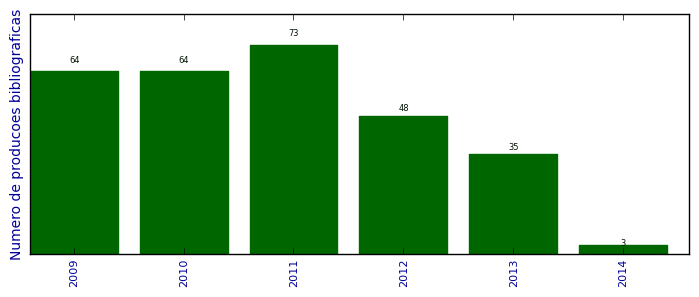

UFSM - Análise do Lattes
Total de produção bibliográfica

Número total de itens: 287
2014
| 1. | BARBOSA, G. ; FAGAN, S. B. ; MARTINEZ, D. ; ALVES, O. L. ; RODRIGUES JUNIOR, L. C.. Lipopolysaccharide influences on the toxicity of oxidised multiwalled carbon nanotubes to murine splenocytes iin vitro/i. Journal of Experimental Nanoscience. 2014.  [ citações Google Scholar | citações Microsoft Acadêmico | busca Google ] |
| 2. | LARA, IVI VALENTINI ; ZANELLA, IVANA ; FAGAN, SOLANGE BINOTTO. Functionalization of carbon nanotube by carboxyl group under radial deformation. Chemical Physics (Print). v. 428, p. 117-120, 2014. [ citações Google Scholar | citações Microsoft Acadêmico | busca Google ] Qualis: B2 |
| 3. | MACHADO DE MENEZES, VIVIAN ; MOTA, Ronaldo ; ZANELLA, IVANA ; FAGAN, SOLANGE BINOTTO. Pristine and functionalized capped carbon nanotubes under electric fields. Physica Status Solidi. B, Basic Research. v. 251, p. 649-654, 2014. [ citações Google Scholar | citações Microsoft Acadêmico | busca Google ] Qualis: Não identificado (Physica Status Solidi. B, Basic Research) |
2013
| 1. | BEVILAQUA, R. ; CAVA, C. ; ZANELLA, I. ; SALVATIERRA, R. ; ZARBIN, A. J. G. ; ROMAN, L. ; FAGAN, S. B.. Interactions of iron oxide-filled carbon nanotubes with gas molecules. Physical Chemistry Chemical Physics. v. 15, p. 14340-14346, 2013. [ citações Google Scholar | citações Microsoft Acadêmico | busca Google ] Qualis: Não identificado (Physical Chemistry Chemical Physics) |
| 2. | BUENO, R. B. ; Zanella da Silva,Ivana ; Bergoli, R ; FAGAN, S. B.. ESTUDO DE PRIMEIROS PRINCÍPIOS DA MANGIFERINA INTERAGINDO COM FULERENO E GRAFENO. Em: III Salão de Iniciação Científica - UNIFRA, 2013, Santa Maria - RS. Anais do SIC. Santa Maria - RS: Editora da UNIFRA, v. 1, p. 1-1, 2013. [ citações Google Scholar | citações Microsoft Acadêmico | busca Google ] |
| 3. | DUART, M. A. ; FAGAN, SOLANGE BINOTTO ; ISAIA, G. C.. Concreto o segundo produto mais consumido no planeta - evolução e sustentabilidade através da nanotecnologia. Em: XVII Simpósio de Ensino, v. 3, p. 1-10, 2013. [ citações Google Scholar | citações Microsoft Acadêmico | busca Google ] Qualis: Não identificado (XVII Simpósio de Ensino) |
| 4. | FAGAN, S. B.. Nanociências e Nanotecnologia: conceitos e aplicações. 2013. Apresentação de Trabalho/Conferência ou palestra |
| 5. | FAGAN, S. B.. Functionalization of Carbon Nanostructures: ab initio simulations. 2013. Apresentação de Trabalho/Conferência ou palestra |
| 6. | FAGAN, S. B. ; TONEL, M. ; AIMI, D. M. ; Menezes, V ; ZANELLA, I.. Ab initio simulation of cysteine interacting with graphene and carbon nanoribbon. Em: Graphene Brazil 2013, 2013, Búzios, RJ. Anais do Evento, v. 1, p. 41-41, 2013. [ citações Google Scholar | citações Microsoft Acadêmico | busca Google ] |
| 7. | FIGUEIREDO, J. ; SANTOS, C. L. ; FAGAN, S. B. ; ZANELLA, I.. Interação da ciclodextrina com ácido acetilsalicílico: um estudo de primeiros princípios. Disciplinarum Scientia. Série Ciências Naturais e Tecnológicas. v. 14, p. 139-147, 2013. [ citações Google Scholar | citações Microsoft Acadêmico | busca Google ] Qualis: Não identificado (Disciplinarum Scientia. Série Ciências Naturais e Tecnológicas) |
| 8. | FLORES, G. F. ; FAGAN, S. B.. PROPRIEDADES ESTRUTURAIS E ELETRÔNICAS DE GRAFENO E SILICENO MONO E MULTICAMADAS. Em: III Salão de Iniciação Científica - UNIFRA, 2013, Santa Maria - RS. Anais do SIC. Santa Maria - RS: UNIFRa, v. 1, p. 1-1, 2013. [ citações Google Scholar | citações Microsoft Acadêmico | busca Google ] |
| 9. | FLORES, G. F. ; FAGAN, SOLANGE BINOTTO. Propriedades estruturais e eletrônicas de grafeno e siliceno mono e multicamadas. Em: XVII Simpósio de Ensino, Pesquisa e Extensão, 2013, Santa Maria - RS. Anais do Simpósio de Ensino, Pesquisa e Extensão. Santa Maria - RS: Editora do Centro Universitário Franciscano, v. 3, p. 1-2, 2013. [ citações Google Scholar | citações Microsoft Acadêmico | busca Google ] |
| 10. | FLORES, G. F. ; ZANELLA, I. ; FAGAN, S. B.. Electronic and Structural Properties of Graphene and Silicene Mono, Double and Three Layers. Em: Graphene Brazil 2013, 2013, Santa Maria - RS. Anais do Evento, v. 1, p. 41-41, 2013. [ citações Google Scholar | citações Microsoft Acadêmico | busca Google ] |
| 11. | JAURIS, I. ; MACHADO, Fernando Machado ; FAGAN, S. B. ; ZANELLA, I.. Endocrine Disruptors interacting with Graphene: a theoretical approach. Em: Graphene Brazil 2013, 2013, Búzios, RJ. Anais do Evento, v. 1, p. 41-41, 2013. [ citações Google Scholar | citações Microsoft Acadêmico | busca Google ] |
| 12. | LARA, I. V. ; FAGAN, S. B.. Carboxylated carbon nanotube under pression. Em: International Conference on Diamond and Carbon Materials, 2013, Riva del Garda, Itália. Anais do Evento, v. 1, p. 1-1, 2013. [ citações Google Scholar | citações Microsoft Acadêmico | busca Google ] |
| 13. | LARA, I. V. ; TONEL, M. Z. ; FAGAN, SOLANGE BINOTTO. Comparação do efeito de carboxilação em grafeno e nanotubo de carbono. Em: XVII Simpósio de Ensino, Pesquisa e Extensão, 2013, Santa Maria - RS. Anais do Simpósio de Ensino, Pesquisa e Extensão. Santa Maria - RS: Editora do Centro Universitário Franciscano, v. 3, p. 1-2, 2013. [ citações Google Scholar | citações Microsoft Acadêmico | busca Google ] |
| 14. | LARA, I. V. ; TONEL, M. Z. ; ROSSATO, J. ; ZANELLA, I. ; FAGAN, S. B.. Carboxylated Graphene and Carbon Nanotube: An Ab Initio Study. Em: Graphene Brazil 2013, 2013, Búzios, RJ. Anais do Evento, v. 1, p. 41-41, 2013. [ citações Google Scholar | citações Microsoft Acadêmico | busca Google ] |
| 15. | MACHADO, Fernando Machado ; FAGAN, S. B. ; BERGMANN, C. P. ; LIMA, E. C. ; ADEBAYO, M. A.. Adsorption of a textile dye from aqueous solutions by carbon nanotubes. Materials Research (São Carlos. Impresso). 2013. [ citações Google Scholar | citações Microsoft Acadêmico | busca Google ] |
| 16. | MACHADO, Fernando Machado ; JAURIS, I. ; FAGAN, S. B. ; LIMA, E. C.. Adsorption of Reactive Blue 4 dye from water solutions by Carbon Nanotubes and Graphene: experiment and theory. Em: Graphene Brazil 2013, 2013, Búzios, RJ. Anais do Evento, v. 1, p. 41-41, 2013. [ citações Google Scholar | citações Microsoft Acadêmico | busca Google ] |
| 17. | MARTINS, M. ; FAGAN, SOLANGE BINOTTO. Contextuando uma base de dados de íntrons com metadados científicos disponíveis no Pubmed. Em: XVII Simpósio de Ensino, Pesquisa e Extensão, 2013, Santa Maria - RS. Anais do Simpósio de Ensino, Pesquisa e Extensão. Santa Maria - RS: Editora do Centro Universitário Franciscano, v. 3, p. 1-1, 2013. [ citações Google Scholar | citações Microsoft Acadêmico | busca Google ] |
| 18. | MARTINS, M. ; TONEL, M. ; Zanella da Silva,Ivana ; FAGAN, S. B.. Electronic transport between Adenine and Carbon Nanoribbon. Em: Graphene Brazil 2013, 2013, Búzios, RJ. Anais do Evento, v. 1, p. 36-36, 2013. [ citações Google Scholar | citações Microsoft Acadêmico | busca Google ] |
| 19. | MARTINS, M. ; TONEL, M. ; ZANELLA, I. ; FAGAN, S. B.. Nanoribbon as genetic basis sequencer using electronic transport interaction. Em: International Conference on Diamond and Carbon Materials, 2013, Riva del Garda, Itália. Anais do Evento, v. 1, p. 1-1, 2013. [ citações Google Scholar | citações Microsoft Acadêmico | busca Google ] |
| 20. | MARTINS, M. ; TONETTO, B. ; FAGAN, S. B. ; Zanella, I. Electronic and structural properties of carbon nanotubes interacting with herbicides and fungicides molecules. Em: International Conference on Diamond and Carbon Materials, 2013, Riva del Garda, Itália. Anais do Evento, v. 1, p. 1-1, 2013. [ citações Google Scholar | citações Microsoft Acadêmico | busca Google ] |
| 21. | MOURA, J. U. ; BARBOSA, G. ; GENRO, C. ; HERNANDEZ, R. D. ; IZQUIERDO, S. S. ; GOMES, P. ; FAGAN, S. B. ; RAFFIN, R.. Development of Mangiferin-loaded polymeric nanocapsules. Journal of Nanopharmaceutics and Drug Delivery. 2013. [ citações Google Scholar | citações Microsoft Acadêmico | busca Google ] |
| 22. | OLIVEIRA, P. V. ; ROSA, M. L. ; FAGAN, SOLANGE BINOTTO. Identificação de Benefícios e Riscos das Nanopartículas via Propriedades Físico-químicas. Em: XVII Simpósio de Ensino, Pesquisa e Extensão, 2013, Santa Maria - RS. Anais do Simpósio de Ensino, Pesquisa e Extensão. Santa Maria - RS: Editora do Centro Universitário Franciscano, v. 3, p. 1-1, 2013. [ citações Google Scholar | citações Microsoft Acadêmico | busca Google ] |
| 23. | PIRES, R. O. ; FAGAN, S. B. ; RAFFIN, R.. Modelagem matemática de perfis de liberação de fármacos a partir de nanocarreadores. Disciplinarum Scientia. Série Ciências Naturais e Tecnológicas. v. 14, p. 99-107, 2013. [ citações Google Scholar | citações Microsoft Acadêmico | busca Google ] Qualis: Não identificado (Disciplinarum Scientia. Série Ciências Naturais e Tecnológicas) |
| 24. | SANTOS, M. A. P. ; MARTINS, M. ; ZANELLA, I. ; FAGAN, S. B.. TICL3 E TICL4 adsorvido em grafeno via modelagem molecular. Disciplinarum Scientia. Série Ciências Naturais e Tecnológicas. v. 14, p. 149-155, 2013. [ citações Google Scholar | citações Microsoft Acadêmico | busca Google ] Qualis: Não identificado (Disciplinarum Scientia. Série Ciências Naturais e Tecnológicas) |
| 25. | SILVA, T. E. ; FAGAN, SOLANGE BINOTTO. Terapia Fotodinâmica: conceitos e aplicações para o tratamento de câncer de pele. Em: XVII Simpósio de Ensino, Pesquisa e Extensão, 2013, Santa Maria - RS. Anais do Simpósio de Ensino, Pesquisa e Extensão. Santa Maria - RS: Editora do Centro Universitário Franciscano, v. 3, p. 1-2, 2013. [ citações Google Scholar | citações Microsoft Acadêmico | busca Google ] |
| 26. | TONEL, M. Z. ; MARTINS, M. ; PONTES, R. B. ; FAGAN, SOLANGE BINOTTO. Grafeno interagindo com Doxorrubicina: um estudo ab initio. Em: XVII Simpósio de Ensino, Pesquisa e Extensão, 2013, Santa Maria - RS. Anais do Simpósio de Ensino, Pesquisa e Extensão. Santa Maria - RS: Editora do Centro Universitário Franciscano, v. 3, p. 1-2, 2013. [ citações Google Scholar | citações Microsoft Acadêmico | busca Google ] |
| 27. | TONEL, M. Z. ; PONTES, R. B. ; FAGAN, S. B.. Ab Initio Simulation of Graphene Interacting with Doxorubicin. Em: Graphene Brazil 2013, 2013, Búzios, RJ. Anais do Evento, v. 1, p. 41-41, 2013. [ citações Google Scholar | citações Microsoft Acadêmico | busca Google ] |
| 28. | TONEL, M. Z. ; ROSSATO, J. ; FAGAN, S. B. ; ZANELLA, I.. ESTUDO AB INITIO DAS PROPRIEDADES ESTRUTURAIS ELETRÔNICAS E MAGNÉTICAS DO GRAFENO CARBOXILADO. Disciplinarum Scientia. Série Ciências Naturais e Tecnológicas. v. 14, p. 131-138, 2013. [ citações Google Scholar | citações Microsoft Acadêmico | busca Google ] Qualis: Não identificado (Disciplinarum Scientia. Série Ciências Naturais e Tecnológicas) |
| 29. | TONEL, M. Z. ; ROSSATO, J. ; ZANELLA, I. ; FAGAN, S. B.. Estudo ab initio das propriedades estruturais eletrônicas e magnéticas do grafeno carboxilado. Disciplinarum Scientia. Série Ciências Naturais e Tecnológicas. v. 14, p. 131-137, 2013. [ citações Google Scholar | citações Microsoft Acadêmico | busca Google ] Qualis: Não identificado (Disciplinarum Scientia. Série Ciências Naturais e Tecnológicas) |
| 30. | TONETTO, B. ; MARTINS, M. ; FAGAN, S. B. ; ZANELLA, I.. Glifosato adsorvido em nanotubos de carbono via modelagem molecular. Disciplinarum Scientia. Série Ciências Naturais e Tecnológicas. v. 14, p. 15-22, 2013. [ citações Google Scholar | citações Microsoft Acadêmico | busca Google ] Qualis: Não identificado (Disciplinarum Scientia. Série Ciências Naturais e Tecnológicas) |
| 31. | VENDRAME, L. ; BONORINO, F. ; CARMO, G. ; MADALOSSO, R. ; GOMES, P. ; RAFFIN, R. ; FAGAN, S. B.. Simulação de Primeiros Princípios da Mangiferina Interagindo com alfa-ciclodextrina. Química Nova (Impresso). 2013. [ citações Google Scholar | citações Microsoft Acadêmico | busca Google ] |
| 32. | VENDRAME, L. ; MICHELON, E. ; Zanella, I ; FAGAN, S. B. ; R. Mota. First principles simulations of zidovudine (AZT) molecules interacting with carbon nanostructures. Journal of Computational and Theoretical Nanoscience. v. 10, p. 313-317, 2013. [ citações Google Scholar | citações Microsoft Acadêmico | busca Google ] Qualis: B4 |
| 33. | VENDRAME, L. ; Zanella da Silva,Ivana ; FAGAN, S. B.. Carbon nanostructures interating with morphine. Em: Graphene Brazil 2013, 2013, Búzios, RJ. Anais do Evento, v. 1, p. 41-41, 2013. [ citações Google Scholar | citações Microsoft Acadêmico | busca Google ] |
| 34. | VENDRAME, L. ; ZANELLA, Ivana ; FAGAN, SOLANGE BINOTTO. Estudo Teórico da Interação da Temozolamida com Fulereno. Em: XVII Simpósio de Ensino, Pesquisa e Extensão, 2013, Santa Maria - RS. Anais do Simpósio de Ensino, Pesquisa e Extensão. Santa Maria - RS: Editora do Centro Universitário Franciscano, v. 3, p. 1-2, 2013. [ citações Google Scholar | citações Microsoft Acadêmico | busca Google ] |
| 35. | ZANELLA, I. ; NASCIMENTO, D. ; FAGAN, S. B.. Carbon Nanostructures interacting with drugs and vitamins via molecular modeling. Em: Graphene Brazil 2013, 2013, Búzios, RJ. Anais do Evento, v. 1, p. 41-41, 2013. [ citações Google Scholar | citações Microsoft Acadêmico | busca Google ] |
2012
| 1. | BISOGNIN, E. ; ZANELLA, I. ; FAGAN, S. B. ; BISOGNIN, V.. Ensino e Aprendizagem de Conceitos Matemáticos Relacionados à Nanociência por meio da Modelagem Matemática. Acta Scientiae (ULBRA). v. 14, p. 200-214, 2012. [ citações Google Scholar | citações Microsoft Acadêmico | busca Google ] Qualis: Não identificado (Acta Scientiae (ULBRA)) |
| 2. | BUENO, L. ; FAGAN, S. B. ; Zanella, I. Meloxicam interagindo nanoestruturas de carbono via modelagem molecular. Em: 4º Encontro do INCT de Nanomateriais de Carbono, 2012, Goiânia, GO. Anais do Evento. Belo Horizonte: INCT, v. 1, p. 125-125, 2012. [ citações Google Scholar | citações Microsoft Acadêmico | busca Google ] |
| 3. | BUENO, L. M. ; ZANELLA, I. ; FAGAN, S. B.. FULERENO E NANOTUBO DE CARBONO INTERAGINDO COM O FÁRMACO MELOXICAM VIA SIMULAÇÕES DE PRIMEIROS PRÍNCIPIOS. Em: XVI SIMPÓSIO DE ENSINO, PESQUISA E EXTENSÃO: APRENDER E EMPREENDER NA EDUCAÇÃO E NA CIÊNCIA., 2012, Santa Maria - RS. ANAIS SIMPÓSIO DE ENSINO, PESQUISA E EXTENSÃO UNIFRA, v. 3, p. 1-1, 2012. [ citações Google Scholar | citações Microsoft Acadêmico | busca Google ] |
| 4. | BUENO, R. B. ; FAGAN, S. B. ; Zanella, I ; RAFFIN, R.. INTERAÇÃO DE FULERENO E GRAFENO COM MANGIFERINA. Em: XVI SIMPÓSIO DE ENSINO, PESQUISA E EXTENSÃO: APRENDER E EMPREENDER NA EDUCAÇÃO E NA CIÊNCIA, 2012, Santa Maria - RS. ANAIS SIMPÓSIO DE ENSINO, PESQUISA E EXTENSÃO UNIFRA. Santa Maria: UNIFRA, v. 3, p. 1-1, 2012. [ citações Google Scholar | citações Microsoft Acadêmico | busca Google ] |
| 5. | BUENO, R. B. ; FLORES, G. F. ; ZANELLA, I. ; RAFFIN, R. ; FAGAN, S. B.. ESTUDO DE PRIMEIROS PRINCÍPIOS DA MANGIFERINA INTERAGINDO COM FULERENO E GRAFENO. Em: 4º Encontro do INCT de Nanomateriais de Carbono, 2012, Goiânia, GO. Anais do Evento. Belo Horizonte: INCT, v. 1, p. 159-159, 2012. [ citações Google Scholar | citações Microsoft Acadêmico | busca Google ] |
| 6. | CADORE, A. ; ZANELLA, I. ; Menezes, V ; ROSSATO, J. ; MOTA, Ronaldo ; FAGAN, S. B.. Metal-doped carbon nanotubes interacting with vitamin C. PCCP. Physical Chemistry Chemical Physics (Print). v. 14, p. 16737-16744, 2012. [ citações Google Scholar | citações Microsoft Acadêmico | busca Google ] Qualis: B2 (Chemical Physics (Print)) |
| 7. | Ellwanger, Anderson ; ROSSATO, J. ; BORTOLUZZI, V. ; FAGAN, S. B.. Objetos de aprendizagem para o ensino de Nanociências. Em: II Simpósio de Ensino de Física e de Matemática: relação entre saberes e fazeres, v. 1, p. 1-8, 2012. [ citações Google Scholar | citações Microsoft Acadêmico | busca Google ] Qualis: Não identificado (II Simpósio de Ensino de Física e de Matemática: relação entre saberes e fazeres) |
| 8. | Ellwanger, Anderson ; ROSSATO, J. ; BORTOLUZZI, V. ; FAGAN, S. B.. Objetos de aprendizagem para o ensino de Nanociências. 2012. Apresentação de Trabalho/Comunicação |
| 9. | Ellwanger, Anderson ; ROSSATO, J. ; GRANADA, M. A. ; BORTOLUZZI, V. ; FAGAN, S. B.. O Ensino de Nanociências por meio de Objetos de Aprendizagem. RENOTE. Revista Novas Tecnologias na Educação. v. 10, p. 1-10, 2012. [ citações Google Scholar | citações Microsoft Acadêmico | busca Google ] Qualis: Não identificado (RENOTE. Revista Novas Tecnologias na Educação) |
| 10. | FAGAN, S. B.. Nanociências e Nanotecnologia: conceitos e aplicação na área computacional. 2012. Apresentação de Trabalho/Conferência ou palestra |
| 11. | FAGAN, S. B.. Radiação Ultravioleta, Filtro Solar e Nanotecnologia. 2012. Apresentação de Trabalho/Conferência ou palestra |
| 12. | FAGAN, S. B.. Nanotecnologia: conceito e interdisciplinaridade. 2012. Apresentação de Trabalho/Conferência ou palestra |
| 13. | FAGAN, S. B.. Nanomateriais de Carbono: simulação ab initio. 2012. Apresentação de Trabalho/Conferência ou palestra |
| 14. | FAGAN, S. B. ; Ellwanger, Anderson. Nanotecnologia e Nanociência. 2012. Apresentação de Trabalho/Conferência ou palestra |
| 15. | FAGAN, S. B. ; JAURIS, I.. Dye Adsorption on Carbon Nanotubes. Em: XI Encontro da SBPMat, 2012, Florianópolis, SC. Anais do XI Encontro da SBPMat. São Paulo - SP: SBPMat, v. 1, p. 1-1, 2012. [ citações Google Scholar | citações Microsoft Acadêmico | busca Google ] |
| 16. | FAGAN, S. B. ; JAURIS, I.. Dye Adsorption on Carbon Nanotubes. 2012. Apresentação de Trabalho/Conferência ou palestra |
| 17. | FAGAN, S. B. ; JAURIS, I. ; MACHADO, Fernando Machado. Ab Initio Simulation of Dye Adsorption on Carbon Nanotubes. Em: XXXVIII Congresso de Químicos Teóricos de Expressão Latina, 2012, Natal, RN. Anais do Evento. Natal, RN: Quitel, v. 1, p. 1-1, 2012. [ citações Google Scholar | citações Microsoft Acadêmico | busca Google ] |
| 18. | FAGAN, S. B. ; ZANELLA, I.. Nanomateriais de Carbono: simulação ab initio. Em: 4º Encontro do INCT de Nanomateriais de Carbono, 2012, Santa Maria - RS. Anais do Evento. Santa Maria: INCT, v. 1, p. 38-38, 2012. [ citações Google Scholar | citações Microsoft Acadêmico | busca Google ] |
| 19. | FIGUEIREDO, J. ; FONTANA, T. ; BUENO, L. ; FAGAN, S. B. ; Zanella, I. Cyclodextrins interacting with vitamins: ab initi simulations. Em: XXXV Encontro Nacional de Física da Matéria Condensada, 2012, Águas de Lindóia - SP. Livro de resumos. São Paulo - SP: Sociedade Brasileira de Física, v. 1, p. 1-1, 2012. [ citações Google Scholar | citações Microsoft Acadêmico | busca Google ] |
| 20. | FLORES, G. F. ; FAGAN, S. B.. Avaliação das Propriedades do Grafeno Multicamadas Interagindo com Liítio. Em: XIII Escola Brasileira de Estrutura Eletrônica, 2012, Cuiabá - MT. Livro de resumos. São Paulo - SP: SBF, v. 1, p. 26-26, 2012. [ citações Google Scholar | citações Microsoft Acadêmico | busca Google ] |
| 21. | FLORES, G. F. ; FAGAN, S. B.. GRAFENO MONO E MULTICAMADAS INTERAGINDO COM LÍTIO: UM ESTUDO DE PRIMEIROS PRINCÍPIOS. Em: XVI SIMPÓSIO DE ENSINO, PESQUISA E EXTENSÃO: APRENDER E EMPREENDER NA EDUCAÇÃO E NA CIÊNCIA, 2012, Santa Maria - RS. ANAIS SIMPÓSIO DE ENSINO, PESQUISA E EXTENSÃO UNIFRA. Santa Maria: UNIFRA, v. 3, p. 1-1, 2012. [ citações Google Scholar | citações Microsoft Acadêmico | busca Google ] |
| 22. | FLORES, G. F. ; FAGAN, S. B.. Structural and electronic properties of graphene and silicene mono-and multilayer. Em: XI Encontro da SBPMat, 2012, Florianópolis, SC. Anais do XI Encontro da SBPMat. São Paulo - SP: SBPMat, v. 1, p. 1-1, 2012. [ citações Google Scholar | citações Microsoft Acadêmico | busca Google ] |
| 23. | FLORES, G. F. ; FAGAN, S. B.. GRAFENO MONO E MULTICAMADAS INTERAGINDO COM LÍTIO: UM ESTUDO DE PRIMEIROS PRINCÍPIOS. Em: 4º Encontro do INCT de Nanomateriais de Carbono, 2012, Goiânia, GO. Anais do Evento. Belo Horizonte: INCT, v. 1, p. 91-91, 2012. [ citações Google Scholar | citações Microsoft Acadêmico | busca Google ] |
| 24. | JAURIS, I. ; ZANELLA, I. ; FAGAN, S. B.. Adsorção de corantes em Nanotubos de Carbono: Uma abordagem de primeiros princípios. Em: 4º Encontro do INCT de Nanomateriais de Carbono, 2012, Goiânia, GO. Anais do Evento. Belo Horizonte: INCT, p. 1-1, 2012. [ citações Google Scholar | citações Microsoft Acadêmico | busca Google ] |
| 25. | LARA, I. V. ; FAGAN, S. B.. Single-, double-, and triple-walled carbon nanotubes under radial deformation, a first principles study. Em: XIII Escola Brasileira de Estrutura Eletrônica, 2012, Cuiabá - MT. Livro de resumos. São Paulo - SP: SBF, v. 1, p. 39-39, 2012. [ citações Google Scholar | citações Microsoft Acadêmico | busca Google ] |
| 26. | LARA, I. V. ; FAGAN, S. B.. A first principles study of radial deformation of single-,double-, and triple-walled carbon nanotubes. Em: XXXV Encontro Nacional de Física da Matéria Condensada, 2012, Águas de Lindóia - SP. Livro de resumos. São Paulo - SP: Sociedade Brasileira de Física, v. 1, p. 1-1, 2012. [ citações Google Scholar | citações Microsoft Acadêmico | busca Google ] |
| 27. | LARA, I. V. ; FAGAN, S. B.. Estudo das propriedades estruturais, eletrônicas e vibracionais de nanotubos de carbono radialmente deformados. Em: 4º Encontro do INCT de Nanomateriais de Carbono, 2012, Goiânia, GO. Anais do Evento. Belo Horizonte: INCT, v. 1, p. 109-109, 2012. [ citações Google Scholar | citações Microsoft Acadêmico | busca Google ] |
| 28. | MACHADO, Fernando Machado ; BERGMANN, C. P. ; LIMA, E. C. ; FAGAN, S. B.. Adsorption of a Textile Dye from Aqueous Solutions by Carbon Nanotubes. Em: Congresso Brasileiro de Engenharia e Ciência dos Materiais CBECiMat, v. 1, p. 1671-1689, 2012. [ citações Google Scholar | citações Microsoft Acadêmico | busca Google ] Qualis: Não identificado (Congresso Brasileiro de Engenharia e Ciência dos Materiais CBECiMat) |
| 29. | MACHADO, Fernando Machado ; BERGMANN, C. P. ; LIMA, E. C. ; ROYER, B. ; SOUZA, F. ; JAURIS, I. ; CALVETE, T. ; FAGAN, S. B.. Adsorption of Reactive Blue 4 dye from water solutions by carbon nanotubes: experiment and theory. PCCP. Physical Chemistry Chemical Physics (Print). v. 14, p. 11139-11153, 2012. [ citações Google Scholar | citações Microsoft Acadêmico | busca Google ] Qualis: B2 (Chemical Physics (Print)) |
| 30. | MARTINS, M. ; FAGAN, S. B.. CONSTRUÇÃO DE UMA BASE DE DADOS GENÉTICOS A PARTIR DE UM INVENTÁRIO DE INTRONS PROCESSADOS EM GENOMA HUMANO. Em: XVI SIMPÓSIO DE ENSINO, v. 3, p. 1-6, 2012. [ citações Google Scholar | citações Microsoft Acadêmico | busca Google ] Qualis: Não identificado (XVI SIMPÓSIO DE ENSINO) |
| 31. | MARTINS, M. ; Menezes, V ; TONEL, M. Z. ; ZANELLA, I. ; FAGAN, S. B.. Genetic bases interacting with nanoribbon. Em: XXXVIII Congresso de Químicos Teóricos de Expressão Latina, 2012, Natal, RN. Anais do Evento. Natal, RN: Quitel, v. 1, p. 1-1, 2012. [ citações Google Scholar | citações Microsoft Acadêmico | busca Google ] |
| 32. | Menezes, V ; FAGAN, S. B.. Modelagem Molecular de Nanossistemas de Interesse Biológico para Aplicações em Carreamento de Fármacos. Em: Paulo Sausem e Airam Sausem. (Org.). Pesquisas Aplicadas em Modelagem Matemática. 1ed.Ijuí- RS. : Ed. Unijuí. 2012.v. 1, p. 323-350. [ citações Google Scholar | citações Microsoft Acadêmico | busca Google ] |
| 33. | Menezes, V ; MICHELON, E. ; ROSSATO, J. ; I. Zanella ; FAGAN, S. B.. Carbon nanostructures interacting with vitamins A, B3 and C: Ab Initio Simulation. Journal of Biomedical Nanotechnology. v. 8, p. 345-349, 2012. [ citações Google Scholar | citações Microsoft Acadêmico | busca Google ] Qualis: A2 |
| 34. | MICHELON, E. ; ROSSATO, J. ; FAGAN, S. B. ; Zanella, I. Fullerenes interacting with drugs and vitamins: ab initio simulations. Em: XXXV Encontro Nacional de Física da Matéria Condensada, 2012, Águas de Lindóia - SP. Livro de resumos. São Paulo - SP: Sociedade Brasileira de Física, v. 1, p. 1-1, 2012. [ citações Google Scholar | citações Microsoft Acadêmico | busca Google ] |
| 35. | RAFFIN, R. ; OLIVEIRA, A. L. ; LORENZONI, R. ; ANTONOW, M. ; ANDRADE, C. T. ; ALVES, Marta Palma ; FAGAN, S. B.. Natural lipid nanoparticles containing nimesulide: synthesis, characterization and in vivo anti-inflammatory and antinociceptive activities. Journal of Biomedical Nanotechnology. v. 8, p. 309-315, 2012. [ citações Google Scholar | citações Microsoft Acadêmico | busca Google ] Qualis: A2 |
| 36. | ROSSATO, J. ; Ellwanger, Anderson ; Zanella, I ; FAGAN, S. B.. Objetos virtuais de aprendizagem com enfoque em Nanomateriais de Carbono. Em: 4º Encontro do INCT de Nanomateriais de Carbono, 2012, Goiânia, GO. Anais do Evento. Belo Horizonte: INCT, v. 1, p. 121-121, 2012. [ citações Google Scholar | citações Microsoft Acadêmico | busca Google ] |
| 37. | SANTOS, P. M. ; GALLAS, M. R. ; FAGAN, S. B. ; ZANELLA, I. ; HAAS, T. M.. .BEHAVIOR OF BULK CARBON NANOTUBES AS MATRIX AT HIGH PRESSURE. Em: Ist São Carlos Advanced School on Materials Science, 2012, São Carlos, SP. Anais do Evento. São Carlos, SP: UFSCar, v. 1, p. 1-1, 2012. [ citações Google Scholar | citações Microsoft Acadêmico | busca Google ] |
| 38. | SCHWARZ, A. P. ; FAGAN, S. B. ; Bergoli, R ; BERGMANN, C. P.. Nanotubos de Carbono Funcionalizados com TiO2 para Adsorção de Cromo Hexavalente: Uma Abordagem de Primeiros Princípios. Em: 4º Encontro do INCT de Nanomateriais de Carbono, 2012, Goiânia, GO. Anais do Evento. Belo Horizonte: INCT, v. 1, p. 52-52, 2012. [ citações Google Scholar | citações Microsoft Acadêmico | busca Google ] |
| 39. | SILVA, I. I. ; FAGAN, S. B.. NANOMAGNETISMO PARA O ENSINO DE FÍSICA MODERNA E CONTEMPORÂNEA. Em: II Simpósio de Ensino de Física e de Matemática: relação entre saberes e fazeres, v. 1, p. 1-8, 2012. [ citações Google Scholar | citações Microsoft Acadêmico | busca Google ] Qualis: Não identificado (II Simpósio de Ensino de Física e de Matemática: relação entre saberes e fazeres) |
| 40. | TONEL, M. ; FAGAN, S. B.. Ab Initio Simulation of Graphene Interacting with Doxorubicin. Em: XI Encontro da SBPMat, 2012, Florianópolis, SC. Anais do XI Encontro da SBPMat. São Paulo - SP: SBPMat, v. 1, p. 1-1, 2012. [ citações Google Scholar | citações Microsoft Acadêmico | busca Google ] |
| 41. | TONEL, M. Z. ; FAGAN, S. B.. Simulação ab initio de grafeno interagindo com doxorrubicina. Em: XIII Escola Brasileira de Estrutura Eletrônica, 2012, Cuiabá - MT. Livro de resumos. São Paulo - SP: SBF, v. 1, p. 16-16, 2012. [ citações Google Scholar | citações Microsoft Acadêmico | busca Google ] |
| 42. | TONEL, M. Z. ; FAGAN, S. B.. GRAFENO INTERAGINDO COM DOXORRUBICINA: UM ESTUDO AB INITIO. Em: XVI SIMPÓSIO DE ENSINO, PESQUISA E EXTENSÃO: APRENDER E EMPREENDER NA EDUCAÇÃO E NA CIÊNCIA, 2012, Santa Maria - RS. ANAIS SIMPÓSIO DE ENSINO, PESQUISA E EXTENSÃO UNIFRA. Santa Maria: UNIFRA, v. 3, p. 1-1, 2012. [ citações Google Scholar | citações Microsoft Acadêmico | busca Google ] |
| 43. | TONEL, M. Z. ; PONTES, R. B. ; FAGAN, S. B.. Estudo ab-Initio do grafeno interagindo com doxorrubicina. Em: 4º Encontro do INCT de Nanomateriais de Carbono, 2012, Goiânia, GO. Anais do Evento. Belo Horizonte: INCT, v. 1, p. 137-137, 2012. [ citações Google Scholar | citações Microsoft Acadêmico | busca Google ] |
| 44. | TONEL, M. Z. ; PONTES, R. B. ; FAGAN, S. B.. Ab Initio Simulation of Graphene Interacting with Doxorubicin. Em: XXXVIII Congresso de Químicos Teóricos de Expressão Latina, 2012, Natal, RN. Anais do Evento. Natal, RN: Quitel, v. 1, p. 1-1, 2012. [ citações Google Scholar | citações Microsoft Acadêmico | busca Google ] |
| 45. | TONETTO, B. ; MARTINS, M. ; FAGAN, S. B. ; ZANELLA, I.. Nanotubos de Carbono na remoção ou detecção de defensivos agrícolas via modelagem molecular. Em: IV Simpósio de Estrutura Eletrônica e Dinâmica Molecular, 2012, Pirenópolis - GO. Anais do Evento. Pirenópolis, GO: Seedmol, v. 1, p. 25-25, 2012. [ citações Google Scholar | citações Microsoft Acadêmico | busca Google ] |
| 46. | ZANELLA, I. ; Menezes, V ; BUENO, L. M. ; FAGAN, S. B.. Carbon nanostructures interacting with drug and vitamins via ab initio simulations. Em: XI Encontro da SBPMat, 2012, Florianópolis, SC. Anais do XI Encontro da SBPMat. São Paulo - SP: SBPMat, v. 1, p. 1, 2012. [ citações Google Scholar | citações Microsoft Acadêmico | busca Google ] |
| 47. | ZANELLA, I. ; Menezes, V ; BUENO, L. M. ; FAGAN, S. B.. Carbon nanostructures interacting with drug and vitamins via ab initio simulations. Em: XXXVIII Congresso de Químicos Teóricos de Expressão Latina, 2012, Natal, RN. Anais do Evento. Natal, RN: Quitel, v. 1, p. 1-1, 2012. [ citações Google Scholar | citações Microsoft Acadêmico | busca Google ] |
| 48. | ZANELLA, I. ; Menezes, V ; R. Mota ; FAGAN, S. B.. Nanotubos de carbono fechados puros e funcionalizados sob ação de campos elétricos de diferentes intensidades. Em: 4º Encontro do INCT de Nanomateriais de Carbono, 2012, Goiânia, GO. Anais do Evento. Belo Horizonte: INCT, v. 1, p. 107-107, 2012. [ citações Google Scholar | citações Microsoft Acadêmico | busca Google ] |
2011
| 1. | A. G. Souza Filho ; FAGAN, S. B.. Nanomaterials Properties. Em: Mônica Andrade; Carlos Bergmann. (Org.). Nanostructured Materials for Engineering Applications. Berlin. : Springer - Verlag. 2011.v. 1, p. 5-22. [ citações Google Scholar | citações Microsoft Acadêmico | busca Google ] |
| 2. | AIMI, D. M. ; FAGAN, S. B. ; I. Zanella ; ROSSATO, J. ; FRIZZO, C. P.. Interaction of carbon nanotubes with pure carboxylic biotin. Em: Encontro de Física 2011, 2011, Foz do Iguaçu. Anais do evento. São Paulo: Editora da SBF, v. 1, p. 1, 2011. [ citações Google Scholar | citações Microsoft Acadêmico | busca Google ] |
| 3. | AIMI, D. M. ; ROSSATO, J. ; FAGAN, S. B.. Interação de Nanotubos de Carbono com Cisteína: uma abordagem téorica. Em: 6 Encontro da Rede de Nanotubos de Carbono e 3 Encontro do INCT Nanomateriais de Carbono, 2011, Santa Maria - RS. Anais do evento. Santa Maria - RS: UNIFRA, v. 1, p. 54-54, 2011. [ citações Google Scholar | citações Microsoft Acadêmico | busca Google ] |
| 4. | AIMI, D. M. ; ROSSATO, J. ; FAGAN, S. B.. INTERAÇÃO DE NANOTUBOS DE CARBONO COM BIOTINA: UM ESTUDO AB INITIO. Em: XV Simpósio de Ensino, Pesquisa e Extensão, 2011, Santa Maria - RS. Anais do ... Simpósio de Ensino, Pesquisa e Extensão. Santa Maria - RS: UNIFRA, v. 2, p. 1-2, 2011. [ citações Google Scholar | citações Microsoft Acadêmico | busca Google ] |
| 5. | AIMI, D. M. ; ROSSATO, J. ; FRIZZO, C. P. ; FAGAN, S. B.. Interação de nanotubos de carbono puro e carboxilado com a biotina. Em: V Workshop em Nanociências, 2011, Santa Maria - RS. CD do evento. Santa Maria - RS: Editora da Unifra, v. 1, p. 1-1, 2011. [ citações Google Scholar | citações Microsoft Acadêmico | busca Google ] |
| 6. | AIMI, D. M. ; TONEL, M. Z. ; DUTRA, F. A. ; I. Zanella ; FAGAN, S. B.. Ab initio simulations of cysteine interacting with grapphene and carbon nanotubes. Em: Encontro de Física 2011, 2011, Foz do Iguaçu. Anais do evento. São Paulo: Editora da SBF, v. 1, p. 1, 2011. [ citações Google Scholar | citações Microsoft Acadêmico | busca Google ] |
| 7. | AIMI, D. M. ; TONEL, M. Z. ; DUTRA, F. A. ; I. Zanella ; FAGAN, S. B.. Simulação ab initio da interação da cisteina com grafeno e nanotubos de carbono. Em: Encontro de Física 2011, 2011, Santa Maria - RS. CD do evento. Santa Maria - RS: Editora da Unifra, v. 1, p. 1-2, 2011. [ citações Google Scholar | citações Microsoft Acadêmico | busca Google ] |
| 8. | ALVES, Marta Palma ; RAFFIN, R. ; FAGAN, S. B.. Rheological Behavior of Semisolids Formulations Containing Nanostructures Materials. Em: Ruy Beck, Silvia Guterres, Adriana Pohlmann. (Org.). Nanocosmetics and Nanomedicines. Berlin. : Springer. 2011.v. 1, p. 37-45. [ citações Google Scholar | citações Microsoft Acadêmico | busca Google ] |
| 9. | Bergoli, R ; ALVES, Marta Palma ; FAGAN, S. B. ; OSMARI, I. ; KAUFMANN JUNIOR, C. G. ; ANTONOW, M. ; LORENZONI, R. ; ANDRADE, C. T.. AVALIAÇÃO DOS PERFIS DE LIBERAÇÃO IN VITRO DE NANOPARTÍCULAS LIPÍDICAS SÓLIDAS CONTENDO NIMESULIDA. Em: XV Simpósio de Ensino, Pesquisa e Extensão, 2011, Santa Maria - RS. Anais do ... Simpósio de Ensino, Pesquisa e Extensão. Santa Maria - RS: UNIFRA, v. 1, p. 1-2, 2011. [ citações Google Scholar | citações Microsoft Acadêmico | busca Google ] |
| 10. | Bergoli, R ; ALVES, Marta Palma ; FAGAN, S. B. ; OSMARI, I. ; KAUFMANN JUNIOR, C. G. ; ANTONOW, M. ; LORENZONI, R. ; ANDRADE, C. T.. AVALIAÇÃO DOS PERFIS DE LIBERAÇÃO IN VITRO DE NANOPARTÍCULAS LIPÍDICAS SÓLIDAS CONTENDO NIMESULIDA. Em: XV Simpósio de Ensino, Pesquisa e Extensão, 2011, Santa Maria - RS. Anais do ... Simpósio de Ensino, Pesquisa e Extensão. Santa Maria - RS: UNIFRA, v. 1, p. 1-2, 2011. [ citações Google Scholar | citações Microsoft Acadêmico | busca Google ] |
| 11. | Bergoli, R ; I. Zanella ; FAGAN, S. B.. Nanotubos de carbono de paredes dupla dopados com boro: um estudo de primeiros princípios. Em: V Workshop em Nanociências, 2011, Santa Maria - RS. CD do evento. Santa Maria - RS: Editora da Unifra, v. 1, p. 1-1, 2011. [ citações Google Scholar | citações Microsoft Acadêmico | busca Google ] |
| 12. | Bergoli, R ; MOTA, Ronaldo ; I. Zanella ; SILVA, Leandro Barros da ; FAGAN, S. B.. Selenium Nanostructures Adsorbed on Carbon Nanotubes: a DFT Investigation. Journal of Computational and Theoretical Nanoscience. v. 8, p. 1710-1715, 2011. [ citações Google Scholar | citações Microsoft Acadêmico | busca Google ] Qualis: B4 |
| 13. | Bergoli, R ; ROSSATO, J. ; SILVA, Leandro Barros da ; FAGAN, S. B.. Boron and nitrogen doped double wall carbon nanotubes: first-principles calculations. Em: X Encontro da Sociedade Brasileira de Pesquisa em Materiais, 2011, Gramado - RS. Anais do evento. Gramado - RS: SBPMat, v. 1, p. 1-1, 2011. [ citações Google Scholar | citações Microsoft Acadêmico | busca Google ] |
| 14. | Bergoli, R ; SILVA, Leandro Barros da ; ROSSATO, J. ; FAGAN, S. B.. Estudo de primeiros princípios de nanotubos de carbono de paredes dupla dopados com boro e nitrogênio. Em: 6 Encontro da Rede de Nanotubos de Carbono e 3 Encontro do INCT Nanomateriais de Carbono, 2011, Santa Maria - RS. Anais do evento. Santa Maria - RS: UNIFRA, v. 1, p. 167-168, 2011. [ citações Google Scholar | citações Microsoft Acadêmico | busca Google ] |
| 15. | Bergoli, R ; SILVA, Leandro Barros da ; ROSSATO, J. ; FAGAN, S. B.. ESTUDO AB INITIO DE NANOTUBOS DE CARBONO DE PAREDES DUPLA DOPADOS COM BORO E NITROGÊNIO. Em: XV Simpósio de Ensino, Pesquisa e Extensão, 2011, Santa Maria - RS. Anais do ... Simpósio de Ensino, Pesquisa e Extensão. Santa Maria - RS: UNIFRA, v. 2, p. 1-2, 2011. [ citações Google Scholar | citações Microsoft Acadêmico | busca Google ] |
| 16. | BERTAGNOLI, Anderson Alves ; ROSSATO, J. ; FAGAN, S. B.. A TRANSPOSIÇÃO DIDÁTICA EM NANOCIÊNCIA. Em: XV Simpósio de Ensino, Pesquisa e Extensão, 2011, Santa Maria - RS. Anais do ... Simpósio de Ensino, Pesquisa e Extensão. Santa Maria - RS: UNIFRA, v. 1, p. 1-2, 2011. [ citações Google Scholar | citações Microsoft Acadêmico | busca Google ] |
| 17. | BEVILAQUA, R. ; I. Zanella ; FAGAN, S. B.. Iron oxide-filled single-walled carbon nanotubes as gas sensors: a first principle study. Em: Encontro de Física, 2011, Foz do Iguaçu. Anais do evento. São Paulo: Editora da SBF, v. 1, p. 1, 2011. [ citações Google Scholar | citações Microsoft Acadêmico | busca Google ] |
| 18. | BEVILAQUA, R. ; I. Zanella ; FAGAN, S. B.. Nanotubos de carbono como sensores de gases: uma abordagem de primeiros princípios. Em: V Workshop em Nanociências, 2011, Santa Maria. Cd do evento. Santa Maria - RS: Editora da Unifra, v. 1, p. 1-1, 2011. [ citações Google Scholar | citações Microsoft Acadêmico | busca Google ] |
| 19. | CADORE, A. ; FAGAN, S. B. ; Menezes, V ; ROSSATO, J. ; I. Zanella. Electronic and structural properties of metal doped carbon nanotubes. Em: X Encontro da Sociedade Brasileira de Pesquisa em Materiais, 2011, Gramado - RS. Anais do evento. Gramado - RS: SBPMat, v. 1, p. 1-1, 2011. [ citações Google Scholar | citações Microsoft Acadêmico | busca Google ] |
| 20. | CADORE, A. ; Menezes, V ; FAGAN, S. B. ; ROSSATO, J. ; I. Zanella. Propriedades Eletrônicas e Estruturais de Nanotubos de Carbono Dopados com Metais. Disciplinarum Scientia. Série Ciências Naturais e Tecnológicas. v. 12, p. 101-112, 2011. [ citações Google Scholar | citações Microsoft Acadêmico | busca Google ] Qualis: Não identificado (Disciplinarum Scientia. Série Ciências Naturais e Tecnológicas) |
| 21. | CADORE, A. ; Menezes, V ; FAGAN, S. B. ; ROSSATO, J. ; I. Zanella. Carbon Nanotubes metal doped interacting with vitamin C. Em: Encontro de Física 2011, 2011, Foz do Iguaçu. Anais do evento. São Paulo: Editora da SBF, v. 1, p. 1-1, 2011. [ citações Google Scholar | citações Microsoft Acadêmico | busca Google ] |
| 22. | CADORE, A. ; Menezes, V ; FAGAN, S. B. ; ROSSATO, J. ; I. Zanella. Metal doped interacting with vitamin C: ab initio study. Em: X Encontro da Sociedade Brasileira de Pesquisa em Materiais, 2011, Gramado - RS. Anais do evento. Gramado - RS: SBPMat, v. 1, p. 1-1, 2011. [ citações Google Scholar | citações Microsoft Acadêmico | busca Google ] |
| 23. | CADORE, A. ; Menezes, V ; ROSSATO, J. ; FAGAN, S. B. ; I. Zanella. ADSORÇÃO DE VITAMINA C EM NANOTUBOS DE CARBONO DOPADOS COM METAIS DE TRANSIÇÃO VIA MODELAGEM MOLECULAR. Em: XV Simpósio de Ensino, Pesquisa e Extensão, 2011, Santa Maria - RS. Anais do ... Simpósio de Ensino, Pesquisa e Extensão. Santa Maria - RS: Unifra, v. 2, p. 1-2, 2011. [ citações Google Scholar | citações Microsoft Acadêmico | busca Google ] |
| 24. | DIAS, I. W. R. ; Bergoli, R ; FAGAN, S. B. ; I. Zanella ; MORTARI, S. R. ; APPELT, Helmoz R ; RHODEN, C. R. B.. Adsorção de Se e Te em Nanotubos de Carbono: um estudo de primeiros princípios. Em: V Workshop em Nanociências, 2011, Santa Maria - RS. CD do evento. Santa Maria: Editora da Unifra, v. 1, p. 1-2, 2011. [ citações Google Scholar | citações Microsoft Acadêmico | busca Google ] |
| 25. | DIAS, I. W. R. ; RAFFIN, R. ; SILVA, Leandro Barros da ; FAGAN, S. B. ; I. Zanella. Poli-epsilon-caprolactona para entrega de fármacos: uma abordagem de primeiros princípios. Em: V Workshop em Nanociências, 2011, Santa Maria. CD do evento. Santa Maria - RS: Editora da Unifra, v. 1, p. 1-2, 2011. [ citações Google Scholar | citações Microsoft Acadêmico | busca Google ] |
| 26. | DIAS, I. W. R. ; SILVA, Leandro Barros da ; RAFFIN, R. ; FAGAN, S. B. ; I. Zanella. Poly-episilon-caprolactone as a carrier of drugs, an ab initio point of view. Em: Encontro de Física 2011, 2011, Foz do Iguaçu. Anais do evento. São Paulo: Sociedade Brasileira de Física, v. 1, 2011. [ citações Google Scholar | citações Microsoft Acadêmico | busca Google ] |
| 27. | Ellwanger, Anderson ; FAGAN, S. B.. Tópicos exploratórios acerca da Nanociência em Nível Básico. Em: 6 Encontro da Rede de Nanotubos de Carbono e 3 Encontro do INCT Nanomateriais de Carbono, 2011, Santa Maria - RS. Anais do evento. Santa Maria - RS: UNIFRA, v. 1, p. 23-23, 2011. [ citações Google Scholar | citações Microsoft Acadêmico | busca Google ] |
| 28. | FAGAN, S. B.. Functionalization fo Carbon Nanostructures: simulation versus experiment. 2011. Apresentação de Trabalho/Conferência ou palestra |
| 29. | FAGAN, S. B.. Nanocosméticos: conceito e aplicações. 2011. Apresentação de Trabalho/Conferência ou palestra |
| 30. | FAGAN, S. B.. Funcionalização de Nanoestruturas de Carbono. 2011. Apresentação de Trabalho/Conferência ou palestra |
| 31. | FAGAN, S. B. ; I. Zanella. Funcionalização de nanoestruturas de carbono. 2011. Apresentação de Trabalho/Conferência ou palestra |
| 32. | FAGAN, S. B. ; PORTO, Antonio Vicente Lima ; JAURIS, I.. Objetos de Aprendizagem para o Ensino de Física: Custo do Banho e Código de Cores. Disciplinarum Scientia. Série Ciências Naturais e Tecnológicas. v. 12, p. 159-170, 2011. [ citações Google Scholar | citações Microsoft Acadêmico | busca Google ] Qualis: Não identificado (Disciplinarum Scientia. Série Ciências Naturais e Tecnológicas) |
| 33. | FONTANA, T. ; FAGAN, S. B. ; I. Zanella. Interação da alfa-ciclodextrina com fármacos: um estudo ab initio. Em: V Workshop em Nanociências, 2011, Santa Maria - RS. CD do evento. Santa Maria - RS: Editora da Unifra, v. 1, p. 1-1, 2011. [ citações Google Scholar | citações Microsoft Acadêmico | busca Google ] |
| 34. | I. Zanella ; FIGUEIREDO, J. ; FONTANA, T. ; FAGAN, S. B.. Cyclodextrins interacting with vitamins via molecular modeling. Em: X Encontro da Sociedade Brasileira de Pesquisa em Materiais, 2011, Gramado - RS. Anais do evento. Gramado - RS: SBPMat, v. 1, p. 1-1, 2011. [ citações Google Scholar | citações Microsoft Acadêmico | busca Google ] |
| 35. | I. Zanella ; MICHELON, E. ; ROSSATO, J. ; FAGAN, S. B.. Fullerene interacrtion with drugs and vitamins: ab initio simulations. Em: X Encontro da Sociedade Brasileira de Pesquisa em Materiais, 2011, Gramado - RS. Anais do evento. Gramado - RS: SBPMat, v. 1, p. 1-1, 2011. [ citações Google Scholar | citações Microsoft Acadêmico | busca Google ] |
| 36. | I. Zanella ; TONETTO, B. ; FAGAN, S. B.. Estudo da utilização dos nanotubos de carbono na remoção ou detecção de defensivos agrícloas: um estudo de primeiros princípios. Em: V Workshop em Nanociências, 2011, Santa Maria - RS. CD do evento. Santa Maria - RS: Editora da Unifra, v. 1, p. 1-1, 2011. [ citações Google Scholar | citações Microsoft Acadêmico | busca Google ] |
| 37. | JAURIS, I. ; FAGAN, S. B.. Adsorção dos Corantes Antraceno e Laranja de Acredina em Nanotubos de Carbono: uma abordagem de primeiros princípios. Em: V Workshop em Nanociências, 2011, Santa Maria - RS. CD de evento. Santa Maria - RS: UNIFRA, v. 1, p. 1-2, 2011. [ citações Google Scholar | citações Microsoft Acadêmico | busca Google ] |
| 38. | JAURIS, I. ; FAGAN, S. B.. Adsorção de Corantes em Nanotubos de Carbono. Em: 6 Encontro da Rede de Nanotubos de Carbono e 3 Encontro do INCT Nanomateriais de Carbono, 2011, Santa Maria - RS. Anais do Evento. Santa Maria - RS: UNIFRA, v. 1, p. 83-84, 2011. [ citações Google Scholar | citações Microsoft Acadêmico | busca Google ] |
| 39. | JAURIS, I. ; FAGAN, S. B.. ADSORÇÃO DE CORANTES EM NANOTUBOS DE CARBONO: UM ESTUDO DE PRIMEIROS PRINCÍPIOS. Em: XV Simpósio de Ensino, Pesquisa e Extensão, 2011, Santa Maria - RS. Anais do ... Simpósio de Ensino, Pesquisa e Extensão. Santa Maria - RS: Unifra, v. 2, p. 1-2, 2011. [ citações Google Scholar | citações Microsoft Acadêmico | busca Google ] |
| 40. | JAURIS, I. ; FAGAN, S. B. ; I. Zanella. Adsorption of dyes on carbon nanotubes: a first principles approach. Em: Encontro de Física 2011, 2011, Foz do Iguaçu. Anais do evento. São Paulo: Editora da SBF, v. 1, p. 1, 2011. [ citações Google Scholar | citações Microsoft Acadêmico | busca Google ] |
| 41. | JAURIS, I. ; KAUFMANN JUNIOR, C. G. ; TASCHETTO, A. P. ; VILLALBA, B. ; DIAS, Y. P. ; ALVES, Marta Palma ; RAFFIN, R. ; MOREIRA, Eduardo Cereta ; FAGAN, S. B.. Produção de Nanotubos de Carbono via Técnica de Deposição Química de Vapor. Disciplinarum Scientia. Série Ciências Naturais e Tecnológicas. v. 12, p. 159-170, 2011. [ citações Google Scholar | citações Microsoft Acadêmico | busca Google ] Qualis: Não identificado (Disciplinarum Scientia. Série Ciências Naturais e Tecnológicas) |
| 42. | LARA, I. V. ; FAGAN, S. B.. Nanotubos de carbono sob pressão axial, uma abordagem de primeiros princípios. Em: V Workshop em Nanociências, 2011, Santa Maria - RS. CD do evento. Santa Maria - RS: Editora da Unifra, v. 1, p. 1-1, 2011. [ citações Google Scholar | citações Microsoft Acadêmico | busca Google ] |
| 43. | LARA, I. V. ; FAGAN, S. B.. Pressão Radial em Nanotubos de Carbono, uma Abordagem de Primeiros Princípios. Em: 6 Encontro da Rede de Nanotubos de Carbono e 3 Encontro do INCT Nanomateriais de Carbono, 2011, Santa Maria - RS. Anais do evento. Santa Maria - RS: UNIFRA, v. 1, p. 85-86, 2011. [ citações Google Scholar | citações Microsoft Acadêmico | busca Google ] |
| 44. | LARA, I. V. ; FAGAN, S. B.. Axial pressure on carbon nanotubes, a first principles approach. Em: X Encontro da Sociedade Brasileira de Pesquisa em Materiais, 2011, Gramado - RS. Anais do evento. Gramado - RS: SBPMat, v. 1, p. 1-1, 2011. [ citações Google Scholar | citações Microsoft Acadêmico | busca Google ] |
| 45. | LARA, I. V. ; FAGAN, S. B.. AVALIAÇÃO DA PRESSÃO EM NANOTUBOS DE CARBONO SOB O PONTO DE VISTA ESTRUTURAL, ELETRÔNICO E VIBRACIONAL. Em: XV Simpósio de Ensino, Pesquisa e Extensão, 2011, Santa Maria - RS. Anais do ... Simpósio de Ensino, Pesquisa e Extensão. Santa Maria - RS: UNIFRA, v. 1, p. 1-2, 2011. [ citações Google Scholar | citações Microsoft Acadêmico | busca Google ] |
| 46. | MACHADO, Fernando Machado ; BERGMANN, C. P. ; FERNANDES, T. H. M. ; LIMA, E. C. ; ROYER, B. ; CALVETE, T. ; FAGAN, S. B.. Adsorption of Reactive Red M-2BE dye from water solutions by multi-walled carbon nanotubes and activated carbon. Journal of Hazardous Materials (Print). v. 192, p. 1122-1131, 2011. [ citações Google Scholar | citações Microsoft Acadêmico | busca Google ] Qualis: A2 |
| 47. | MACHADO, Fernando Machado ; BERGMANN, C. P. ; LIMA, E. C. ; FAGAN, S. B.. Adsorption of reactive blue 4 dye from water solutions by carbon nanotubes. Em: X Encontro da Sociedade Brasileira de Pesquisa em Materiais, 2011, Gramado - RS. Anais do evento. Gramado - RS: SBPMat, v. 1, p. 1-1, 2011. [ citações Google Scholar | citações Microsoft Acadêmico | busca Google ] |
| 48. | Menezes, V ; FAGAN, S. B.. DFT simulations of defective graphene nanoribons. Em: X Encontro da Sociedade Brasileira de Pesquisa em Materiais, 2011, Gramado - RS. Anais do evento. Gramado - RS: SBPMat, v. 1, p. 1-1, 2011. [ citações Google Scholar | citações Microsoft Acadêmico | busca Google ] |
| 49. | Menezes, V ; I. Zanella ; FAGAN, S. B.. Electric field acting on capped carbon nanotubes. Em: Encontro de Física 2011, 2011, Foz do Iguaçu. Anais do evento. São Paulo: Editora da SBF, v. 1, p. 1, 2011. [ citações Google Scholar | citações Microsoft Acadêmico | busca Google ] |
| 50. | Menezes, V ; I. Zanella ; FAGAN, S. B.. Nanotubos de carbono fechados puros e funcionalizados sob a ação de campos elétricos. Em: 6 Encontro da Rede de Nanotubos de Carbono e 3 Encontro do INCT Nanomateriais de Carbono, 2011, Santa Maria - RS. Anais do evento. Santa Maria - RS: UNIFRA, v. 1, p. 205-206, 2011. [ citações Google Scholar | citações Microsoft Acadêmico | busca Google ] |
| 51. | Menezes, V ; I. Zanella ; FAGAN, S. B.. ESTUDO DA INTERAÇÃO DE MOLÉCULAS DE HIDROQUINONA COM NANOTUBOS DE CARBONO PUROS E CARBOXILADOS POR CÁLCULOS AB INITIO. Em: XV Simpósio de Ensino, Pesquisa e Extensão, 2011, Santa Maria - RS. Anais do ... Simpósio de Ensino, Pesquisa e Extensão. Santa Maria - RS: UNIFRA, v. 1, p. 1-2, 2011. [ citações Google Scholar | citações Microsoft Acadêmico | busca Google ] |
| 52. | Menezes, V ; MICHELON, E. ; ROSSATO, J. ; I. Zanella ; FAGAN, S. B.. Estudo ab initio de nanoestruturas de carbono interagindo com moléculas de vitamina A, B3 e C. Em: V Workshop em Nanociências, 2011, Santa Maria - RS. CD do evento. Santa Maria - RS: Editora da Unifra, v. 1, p. 1-1, 2011. [ citações Google Scholar | citações Microsoft Acadêmico | busca Google ] |
| 53. | Menezes, V ; ROCHA, A. ; I. Zanella ; MOTA, Ronaldo ; FAZZIO, Adalberto ; FAGAN, S. B.. Electronic transport properties of ascorbic acid and nicotinamide adsorbed on single-walled carbon nanotubes. Chemical Physics Letters (Print). v. 506, p. 233-238, 2011. [ citações Google Scholar | citações Microsoft Acadêmico | busca Google ] Qualis: B1 |
| 54. | MICHELON, E. ; FAGAN, S. B. ; I. Zanella. Fulerenos interagindo com fármacos e vitaminas via modelagem molecular. Em: V Workshop em Nanociências, 2011, Santa Maria - RS. CD do evento. Santa Maria - RS: Editora da Unifra, v. 1, p. 1-1, 2011. [ citações Google Scholar | citações Microsoft Acadêmico | busca Google ] |
| 55. | MICHELON, E. ; ROSSATO, J. ; FAGAN, S. B. ; I. Zanella. Simulação Ab Initio de Fulerenos Puros e Carboxilados Interagindo com Vitaminas. Disciplinarum Scientia. Série Ciências Naturais e Tecnológicas. v. 12, p. 113-124, 2011. [ citações Google Scholar | citações Microsoft Acadêmico | busca Google ] Qualis: Não identificado (Disciplinarum Scientia. Série Ciências Naturais e Tecnológicas) |
| 56. | MICHELON, E. ; ROSSATO, J. ; FAGAN, S. B. ; I. Zanella. Fullerenes interacting with drugs and vitamins via molecular modeling. Em: Encontro de Física 2011, 2011, Foz do Iguaçu. Anais do evento. São Paulo - SP: Sociedade Brasileira de Física, v. 1, 2011. [ citações Google Scholar | citações Microsoft Acadêmico | busca Google ] |
| 57. | OLIVEIRA, A. L. ; LORENZONI, R. ; ANTONOW, M. ; AIMI, D. M. ; RAFFIN, R. ; ALVES, Marta Palma ; FAGAN, S. B.. NANOPARTÍCULAS LIPÍDICAS SÓLIDAS CONTENDO NIMESULIDA: ATIVIDADE ANTINOCICEPTIVA E ANTIEDEMATOGÊNICA. Em: XV Simpósio de Ensino, Pesquisa e Extensão, 2011, Santa Maria - RS. Anais do ... Simpósio de Ensino, Pesquisa e Extensão. Santa Maria - RS: UNIFRA, v. 2, p. 1-2, 2011. [ citações Google Scholar | citações Microsoft Acadêmico | busca Google ] |
| 58. | OLIVEIRA, A. L. ; ROGGIA, I. ; ZATTA, K. C. ; ROSSATO, J. ; FAGAN, S. B. ; I. Zanella. Antioxidant evaluation of vitamins E and C nanoencapsulated detected in erit6hrocytes irradiated. Em: Encontro de Física 2011, 2011, Foz do Iguaçu. Anais do evento. São Paulo: Editora da SBF, v. 1, p. 1, 2011. [ citações Google Scholar | citações Microsoft Acadêmico | busca Google ] |
| 59. | PAULA, V. ; FAGAN, S. B.. Biodistribuição de nanopartículas magnéticas utilizando campo magnético em ratos. Em: V Workshop em Nanociências, 2011, Santa Maria - RS. CD do evento. Santa Maria: Editora da Unifra, v. 1, p. 1-1, 2011. [ citações Google Scholar | citações Microsoft Acadêmico | busca Google ] |
| 60. | PIRES, R. O. ; FAGAN, S. B. ; RAFFIN, R.. Modelagem matemática de perfis de liberação de fármacos a partir de nanocarreadores. Em: V Workshop em Nanociências, 2011, Santa Maria. CD do evento. Santa Maria - RS: Editora da Unifra, v. 1, p. 1-1, 2011. [ citações Google Scholar | citações Microsoft Acadêmico | busca Google ] |
| 61. | POWER, S. ; Menezes, V ; FAGAN, S. B. ; FERREIRA, M.. Magnetization profile for impurities in graphene nanoribbons. Physical Review. B, Condensed Matter. (Cessou 1997. Cont. 1098-0121 Physical Review. B, Condensed Matter and Materials Physics). v. 84, p. 195431, 2011. [ citações Google Scholar | citações Microsoft Acadêmico | busca Google ] Qualis: A2 (Physical Review. B, Condensed Matter and Materials Physics) |
| 62. | SANTOS, M. A. P. ; I. Zanella ; FAGAN, S. B.. TiCl3 e TiCl4 interagindo com grafeno: simulação de primeiros princípios. Em: V Workshop em Nanociências, 2011, Santa Maria - RS. CD do evento. Santa Maria - RS: Editora da Unifra, v. 1, p. 1-2, 2011. [ citações Google Scholar | citações Microsoft Acadêmico | busca Google ] |
| 63. | SANTOS, P. M. ; I. Zanella ; FAGAN, S. B. ; HAAS, T. M. ; GALLAS, M. R.. Study of the behavior of bulk carbon nanotubes at high pressure. Em: X Encontro da Sociedade Brasileira de Pesquisa em Materiais, 2011, Gramado - RS. Anais do evento. Gramado - RS: SBPMat, v. 1, p. 1-1, 2011. [ citações Google Scholar | citações Microsoft Acadêmico | busca Google ] |
| 64. | SCHWARZ, A. P. ; Bergoli, R ; BERGMANN, C. P. ; FAGAN, S. B.. Adsorção de Cromo (VI) em nanotubos de carbono funcionalizados com óxido de titânio e grupos carboxilados e hidroxilados. Em: V Workshop em Nanociências, 2011, Santa Maria - RS. CD do evento. Santa Maria - RS: Editora da Unifra, v. 1, p. 1-1, 2011. [ citações Google Scholar | citações Microsoft Acadêmico | busca Google ] |
| 65. | SCHWARZ, A. P. ; Bergoli, R ; FAGAN, S. B. ; BERGMANN, C. P.. Estudo da Adsorção de Cromo(IV) em Nanotubos de Carbono Funcionalizados com Óxido de Titânio, Carboxilas e Hidroxilas. Em: 6 Encontro da Rede de Nanotubos de Carbono e 3 Encontro do INCT Nanomateriais de Carbono, 2011, Santa Maria - RS. Anais do evento. Santa Maria - RS: UNIFRA, v. 1, p. 19-19, 2011. [ citações Google Scholar | citações Microsoft Acadêmico | busca Google ] |
| 66. | TONEL, M. Z. ; FAGAN, S. B. ; I. Zanella. Theoretical study of functionalized carbon nanotubes interacting with amino acids. Em: Encontro de Física 2011, 2011, Foz do Iguaçu. Anais do evento. São Paulo: Editora da SBF, v. 1, p. 1-1, 2011. [ citações Google Scholar | citações Microsoft Acadêmico | busca Google ] |
| 67. | TONEL, M. Z. ; I. Zanella ; FAGAN, S. B.. Estudo Teórico da Interação de Nanotubos de Carbono Funcionalizados com Aminoácidos. Disciplinarum Scientia. Série Ciências Naturais e Tecnológicas. v. 12, p. 139-150, 2011. [ citações Google Scholar | citações Microsoft Acadêmico | busca Google ] Qualis: Não identificado (Disciplinarum Scientia. Série Ciências Naturais e Tecnológicas) |
| 68. | TONEL, M. Z. ; I. Zanella ; FAGAN, S. B.. Interação de nanotubos de carbono com o aminoácido valina. Em: V Workshop em Nanociências, 2011, Santa Maria - RS. CD do evento. Santa Maria - Rs: Editora da Unifra, v. 1, p. 1-2, 2011. [ citações Google Scholar | citações Microsoft Acadêmico | busca Google ] |
| 69. | TONEL, M. Z. ; I. Zanella ; FAGAN, S. B.. Simulação ab initio da interação de nanotubos de carbono funcionalizados com ácidos. Em: 6 Encontro da Rede de Nanotubos de Carbono e 3 Encontro do INCT Nanomateriais de Carbono, 2011, Santa Maria - RS. Anais do evento. Santa Maria - RS: UNIFRA, v. 1, p. 142-143, 2011. [ citações Google Scholar | citações Microsoft Acadêmico | busca Google ] |
| 70. | TONETTO, B. ; FAGAN, S. B. ; I. Zanella. Electronic and structural properties of carbon nanotubes interacting with herbicides and fungicides molecules. Em: Encontro de Física 2011, 2011, Foz do Iguaçu. Anais do evento. São Paulo: Editora da SBF, v. 1, p. 1-1, 2011. [ citações Google Scholar | citações Microsoft Acadêmico | busca Google ] |
| 71. | VENDRAME, L. ; FAGAN, S. B.. Resveratrol interacting with carbon nanotubes: an ab initio simulation. Em: Encontro de Física 2011, 2011, Foz do Iguaçu. Anais do evento. São Paulo: Editora da SBF, v. 1, p. 1, 2011. [ citações Google Scholar | citações Microsoft Acadêmico | busca Google ] |
| 72. | VENDRAME, L. ; FAGAN, S. B.. Grafeno interagindo com resveratrol: um estudo de primeiros princípios. Em: V Workshop em Nanociências, 2011, Santa Maria - RS. CD do evento. Santa Maria - RS: Editora da Unifra, v. 1, p. 1-1, 2011. [ citações Google Scholar | citações Microsoft Acadêmico | busca Google ] |
| 73. | VENDRAME, L. ; FAGAN, S. B. ; I. Zanella. Nimesulide interaction with carboxylated and pristine carbon nanotubes. Em: 6 Encontro da Rede de Nanotubos de Carbono e 3 Encontro do INCT Nanomateriais de Carbono, 2011, Santa Maria - RS. Anais do evento. Santa Maria - RS: UNIFRA, v. 1, p. 109-110, 2011. [ citações Google Scholar | citações Microsoft Acadêmico | busca Google ] |
2010
| 1. | AGUIAR, A. L. ; FAGAN, S. B. ; SILVA, Leandro Barros da ; MENDES FILHO, Josué ; SOUZA FILHO, Antônio Gomes de. Benzonitrile Adsorption on Fe-doped Carbon Nanotubes. Journal of physical chemistry. C. v. 114, p. 10790-10795, 2010. [ citações Google Scholar | citações Microsoft Acadêmico | busca Google ] Qualis: Não identificado (Journal of physical chemistry. C) |
| 2. | AIMI, D. M. ; FAGAN, S. B. ; FRIZZO, C. P. ; I. Zanella ; ROSSATO, J.. Interação entre Nanotubos de carbono Puros e Carboxilados com Biotina. Em: XIV Simpósio de Ensino, Pesquisa e Extensão/SEPE UNIFRA, 2010, Santa Maria - RS. Anais do ... Simpósio de Ensino, Pesquisa e Extensão. Santa Maria - RS: Editora da Unifra, v. 1, p. 1-1, 2010. [ citações Google Scholar | citações Microsoft Acadêmico | busca Google ] |
| 3. | ANDRADE, C. T. ; ROGGIA, I. ; SCHWARZ, A. P. ; FAGAN, S. B.. Nanocompósitos de Óxido de Ti para Atenuação de Radiação em Proteção Radiológica. Em: XIV Simpósio de Ensino, Pesquisa e Extensão (SEPE)/UNIFRA, 2010, Santa Maria - RS. Anais do ... Simpósio de Ensino, Pesquisa e Extensão. Santa Maria - RS: UNIFRA, v. 1, p. 1-1, 2010. [ citações Google Scholar | citações Microsoft Acadêmico | busca Google ] |
| 4. | ANTONOW, M. ; LORENZONI, R. ; ANDRADE, C. T. ; KAULFMANN, G. ; OSMARI, I. ; ALVES, Marta Palma ; FAGAN, S. B. ; RAFFIN, R.. Desenvolvimento e Caracterização Físico-Química de Nanopartículas Lipídicas Sólidas Cotnendo Nimesulida. Em: XIV Simpósio de Ensino, Pesquisa e Extensão (SEPE)/UNIFRA, 2010, Santa Maria - RS. Anais do ... Simpósio de Ensino, Pesquisa e Extensão. Santa Maria - RS: UNIFRA, v. 1, p. 1-1, 2010. [ citações Google Scholar | citações Microsoft Acadêmico | busca Google ] |
| 5. | Bergoli, R ; SILVA, Leandro Barros da ; FAGAN, S. B.. Ab initio study of selenium clusters adsorbed on carbon nanotubes. Em: IX Brazilian MRS Meeting, 2010, Ouro Preto - MG. Livro de resumos. Ouro Preto - MG: SBPMAT, v. 1, p. 1-1, 2010. [ citações Google Scholar | citações Microsoft Acadêmico | busca Google ] |
| 6. | Bergoli, R ; SILVA, Leandro Barros da ; I. Zanella ; FAGAN, S. B.. Estudo ab initio de clusters de selênio adsorvidos em nanotubos de carbono. Em: XIV Simpósio de Ensino, Pesquisa e Extensão/SEPE UNIFRA, 2010, Santa Maria - RS. Anais do ... Simpósio de Ensino, Pesquisa e Extensão. Santa Maria - RS: Editora da UNIFRA, v. 1, p. 1-1, 2010. [ citações Google Scholar | citações Microsoft Acadêmico | busca Google ] |
| 7. | BEVILAQUA, R. ; I. Zanella ; FAGAN, S. B.. Chlorophyll a and pheophytin a as gas sensors of CO2 and O2 molecules. Chemical Physics Letters (Print). v. 496, p. 310-315, 2010. [ citações Google Scholar | citações Microsoft Acadêmico | busca Google ] Qualis: B1 |
| 8. | BEVILAQUA, R. ; TONETTO, B. ; I. Zanella ; FAGAN, S. B.. Chlorophyll as gas sensor. Em: International Conference on Food and Agriculture Applications of Nanotechnologies - Nanoagri 2010, 2010, São Pedro - SP. Anais do Evento. São Paulo: Editora do Evento, v. 1, p. 107, 2010. [ citações Google Scholar | citações Microsoft Acadêmico | busca Google ] |
| 9. | CADORE, A. ; FAGAN, S. B. ; I. Zanella. Nanotubos de Carbono dopados com Metais Interagindo com Vitamina C. Em: XIV Simpósio de Ensino, Pesquisa e Extensão/SEPE - Unifra, 2010, Santa Maria - RS. Anais do ... Simpósio de Ensino, Pesquisa e Extensão. Santa Maria - RS: Editora da Unifra, v. 1, p. 1-1, 2010. [ citações Google Scholar | citações Microsoft Acadêmico | busca Google ] |
| 10. | DUTRA, F. N. ; KÜMMEL, M.B. ; FAGAN, S. B.. Evaluation of the nanocosmetic risks: a relation between the nanomaterials properties and regulatory marks. Em: IX Brazilian MRS Meeting, 2010, Ouro Preto - MG. Resumo do SBPMAT. Ouro Preto: SBPMAT, v. 1, p. 1-1, 2010. [ citações Google Scholar | citações Microsoft Acadêmico | busca Google ] |
| 11. | DUTRA, F. N. ; KÜMMEL, M.B. ; FAGAN, S. B.. Evaluation of the nanocosmetic risks: a relation between the nanomaterials properties and regulatory marks. 2010. Apresentação de Trabalho/Comunicação |
| 12. | Ellwanger, Anderson ; FAGAN, S. B.. Avaliando Tópicos de Nanociências na Física Básica Fazendo Uso de Dissertações. Em: I Simpósio de Ensino de Física e de Matemática: Práticas Docentes Inovadoras, v. 1, p. 1-9, 2010. [ citações Google Scholar | citações Microsoft Acadêmico | busca Google ] Qualis: Não identificado (I Simpósio de Ensino de Física e de Matemática: Práticas Docentes Inovadoras) |
| 13. | Ellwanger, Anderson ; FAGAN, S. B.. Módulo Didático sobre Nanociências para o Ensino Básico. Em: XIV Simpósio de Ensino, Pesquisa e Extensão (SEPE)/UNIFRA, 2010, Santa Maria - RS. Anais do ... Simpósio de Ensino, Pesquisa e Extensão. Santa Maria - RS: UNIFRA, v. 1, p. 1-1, 2010. [ citações Google Scholar | citações Microsoft Acadêmico | busca Google ] |
| 14. | Ellwanger, Anderson ; FAGAN, S. B.. Avaliando Tópicos de Nanociências na Física Básica Fazendo uso de Dissertações. 2010. Apresentação de Trabalho/Comunicação |
| 15. | FAGAN, S. B.. Simulação de Nanoestruturas de Carbono Funcionalizadas. Em: 5º Encontro da Rede Nacional de Pesquisa em Nanotubos de Carbono e 2º Encontro do INCT-NanoCarbono, 2010, Fortaleza - CE. Livro de Resumos. Fortaleza - CE: UFC, v. 1, p. 25-25, 2010. [ citações Google Scholar | citações Microsoft Acadêmico | busca Google ] |
| 16. | FAGAN, S. B.. Ações Inovadoras no Ensino de Física e de Matemática (Painel). 2010. Apresentação de Trabalho/Conferência ou palestra |
| 17. | FAGAN, S. B.. A Inclusão dos Farmacêuticos na Nanotecnologia: possíveis áreas de atuação. 2010. Apresentação de Trabalho/Conferência ou palestra |
| 18. | FAGAN, S. B.. Modelagem e simulação de nanomateriais. 2010. Apresentação de Trabalho/Conferência ou palestra |
| 19. | FAGAN, S. B.. A física como um dos pilares das nanotecnologias. 2010. Apresentação de Trabalho/Conferência ou palestra |
| 20. | FAGAN, S. B.. Funcionalização de nanoestruturas de carbono: simulação versus experimento. 2010. Apresentação de Trabalho/Conferência ou palestra |
| 21. | FAGAN, S. B.. Functionalization of carbon nanostructures: an ab initio approach. 2010. Apresentação de Trabalho/Conferência ou palestra |
| 22. | FAGAN, S. B.. Modelagem e Simulação de Nanomateriais de Carbono. 2010. Apresentação de Trabalho/Conferência ou palestra |
| 23. | FAGAN, S. B.. Simulação de Nanoestruturas de Carbono Funcionalizadas. 2010. Apresentação de Trabalho/Conferência ou palestra |
| 24. | FAGAN, S. B. ; I. Zanella. Nanotecnologia: a escala nanométrica e a interdisciplinaridade. Em: Wilson Engelmann. (Org.). Nanotecnologias: um desafio para o século XXI. 1ed.São Leopoldo. : Casa Leiria. 2010.v. 1, p. 131-140. [ citações Google Scholar | citações Microsoft Acadêmico | busca Google ] |
| 25. | FAGAN, S. B. ; I. Zanella ; BEVILAQUA, R.. Iron- and Iron oxide filled carbon nanotubes as gas sensors: a first principle study. 2010. Apresentação de Trabalho/Comunicação |
| 26. | FARIAS, G. D. ; BRUSCHI, M. ; CECCIM, A. F. ; DIAS, I. W. R. ; VIEIRA, S. ; FAGAN, S. B. ; ALVES, Marta Palma. Tretinoína e Isotretinoína Associados à Nanocarreadores: uma abordagem atual. Em: XIV Simpósio de Ensino, v. 1, p. 1-1, 2010. [ citações Google Scholar | citações Microsoft Acadêmico | busca Google ] Qualis: Não identificado (XIV Simpósio de Ensino) |
| 27. | FIGUEIREDO, J. ; SILVA, Leandro Barros da ; FAGAN, S. B. ; I. Zanella. Ab initio study of the properties of cyclodextrin interacting with drugs. Em: XXXIII Encontro Nacional de Física da Matéria Condensada, 2010, Águas de Lindóia. Livro de Resumos. São Paulo: SBF, v. 1, p. 1, 2010. [ citações Google Scholar | citações Microsoft Acadêmico | busca Google ] |
| 28. | FRIZZO, C. P. ; FAGAN, S. B. ; AIMI, D. M.. Estudo da interação entre Biotina e Nanotubos de Carbono. Em: 5º Encontro da Rede Nacional de Pesquisa em Nanotubos de Carbono e 2º Encontro do INCT-NanoCarbono, 2010, Fortaleza - CE. Livro de Resumos. Fortaleza - CE: UFC, v. 1, p. 50-50, 2010. [ citações Google Scholar | citações Microsoft Acadêmico | busca Google ] |
| 29. | FRIZZO, C. P. ; FAGAN, S. B. ; LIEBOLD-RIBEIRO, Y. ; A. G. Souza Filho ; MARTINS, M. A. P.. Interação de nanotubos de carbono com Líquidos Iônicos. Em: XIV Simpósio de Ensino, Pesquisa e Extensão/SEPE UNIFRA, 2010, Santa Maria - RS. Anais do ... Simpósio de Ensino, Pesquisa e Extensão. Santa Maria - RS: UNIFRA, v. 1, p. 1-1, 2010. [ citações Google Scholar | citações Microsoft Acadêmico | busca Google ] |
| 30. | FRIZZO, C. P. ; FAGAN, S. B. ; LIEBOLD-RIBEIRO, Y. ; MARTINS, M. A. P. ; A. G. Souza Filho. Dispersão de Nanotubos de Carbono (NTC) em Líquidos Iônicos (LI). Em: 5º Encontro da Rede Nacional de Pesquisa em Nanotubos de Carbono e 2º Encontro do INCT-NanoCarbono, 2010, Fortaleza - CE. Livro de Resumos. Fortaleza - CE: UFC, v. 1, p. 47-47, 2010. [ citações Google Scholar | citações Microsoft Acadêmico | busca Google ] |
| 31. | FRIZZO, C. P. ; MARTINS, M. A. P. ; FAGAN, S. B.. Pyrazolopyrimidines as CNTs dispersing by pi-stacking. Em: IX Brazilian MRS Meeting, 2010, Ouro Preto - MG. Livro de Resumos. Ouro Preto - MG: SBPMAT, v. 1, p. 1-1, 2010. [ citações Google Scholar | citações Microsoft Acadêmico | busca Google ] |
| 32. | GIRÃO, Eduardo C. ; FAGAN, S. B. ; I. Zanella ; A. G. Souza Filho. Nicotine adsorption on single wall carbon nanotubes. Journal of Hazardous Materials (Print). v. 184, p. 678-683, 2010. [ citações Google Scholar | citações Microsoft Acadêmico | busca Google ] Qualis: A2 |
| 33. | GIRÃO, Eduardo C. ; LIEBOLD-RIBEIRO, Y. ; BATISTA, J. ; BARROS, E. B. ; FAGAN, S. B. ; MENDES FILHO, Josué ; DRESSELHAUS, M. S. ; A. G. Souza Filho. Functionalization of single-wall carbon nanotubes through chloroform adsorption: Theory and experiment. PCCP. Physical Chemistry Chemical Physics. v. 12, p. 1518-1524, 2010. [ citações Google Scholar | citações Microsoft Acadêmico | busca Google ] Qualis: Não identificado (PCCP. Physical Chemistry Chemical Physics) |
| 34. | GRANADA, M. A. ; ROSSATO, J. ; FAGAN, S. B.. Inserção de Física Moderna e Contemporânea no Ensino Médio através da Nanociência e Nanotecnologia. Em: XIV Simpósio de Ensino, Pesquisa e Extensão (SEPE)/UNIFRA, 2010, Santa Maria - RS. Anais do ... Simpósio de Ensino, Pesquisa e Extensão. Santa Maria - RS: UNIFRA, v. 1, p. 1-1, 2010. [ citações Google Scholar | citações Microsoft Acadêmico | busca Google ] |
| 35. | IANISKI, F. R. ; MORO, T. B. ; RODRIGUES, M. S. ; PAULA, V. ; ROGGIA, I. ; ALVES, Marta Palma ; RAFFIN, R. ; FAGAN, S. B.. Variação da Concentração de Meloxicam na Produção de Nanocápsulas. Em: XIV Simpósio de Ensino, Pesquisa e Extensão (SEPE)/UNIFRA, 2010, Santa Maria - RS. Anais do ... Simpósio de Ensino, Pesquisa e Extensão. Santa Maria - RS: Unifra, v. 1, p. 1-1, 2010. [ citações Google Scholar | citações Microsoft Acadêmico | busca Google ] |
| 36. | LARA, I. V. ; FAGAN, S. B.. Carboxilação de nanotubos de carbono: um estudo ab initio de suas propriedades energéticas, estruturais e eletrônicas. Em: XII Escola Brasileira de Estrutura Eletrônica, 2010, Brasília - DF. Anais do evento. São Paulo - SP: SBF, v. 1, p. 27-27, 2010. [ citações Google Scholar | citações Microsoft Acadêmico | busca Google ] |
| 37. | LARA, I. V. ; JAQUES, Y. M. ; FAGAN, S. B.. Classical Molecular Dynamics of Water Interacting with Pure and Carboxylated Carbon Nanotubes. Em: XXXIII Encontro Nacional de Física da Matéria Condensada, 2010, Águas de Lindóia, SP. Livro de Resumo. São Paulo, SP: SBF, v. 1, p. 1-1, 2010. [ citações Google Scholar | citações Microsoft Acadêmico | busca Google ] |
| 38. | LARA, I. V. ; JAQUES, Y. M. ; FILETI, E. ; FAGAN, S. B.. Carboxylated carbon nanotubes and their interaction with water molecules: a combination of ab initio and empirical techniques. Em: IX Brazilian MRS Meeting, 2010, Ouro Preto - MG. Livro de Resumos do SBPMAT. Ouro Preto - MG: SBPMAT, v. 1, p. 1-1, 2010. [ citações Google Scholar | citações Microsoft Acadêmico | busca Google ] |
| 39. | LARA, I. V. ; JAQUES, Y. M. ; FILETI, E. ; FAGAN, S. B.. Nanotubos de Carbono Carboxilados Interagindo com Água: uma combinação de cálculos ab initio/empírico/ab initio. Em: 5º Encontro da Rede Nacional de Pesquisa em Nanotubos de Carbono e 2º Encontro do INCT-NanoCarbono, 2010, Fortaleza - CE. Livro de Resumos. Fortaleza - CE: UFC, v. 1, p. 57-57, 2010. [ citações Google Scholar | citações Microsoft Acadêmico | busca Google ] |
| 40. | LARA, I. V. ; JAQUES, Y. M. ; FILETI, E. ; FAGAN, S. B.. Carboxylated carbon nanotubes and their interaction with water molecules: a combination of ab initio and empirical techniques. 2010. Apresentação de Trabalho/Comunicação |
| 41. | Menezes, V ; FAGAN, S. B. ; A. G. Souza Filho. Estudo ab initio da interação de nanotubos de carbono com moléculas de primaquina. Em: 5º Encontro da Rede Nacional de Pesquisa em Nanotubos de Carbono e 2º Encontro do INCT-NanoCarbono, 2010, Fortaleza - CE. Livro de Resumos. Fortaleza - CE: UFC, v. 1, p. 48-48, 2010. [ citações Google Scholar | citações Microsoft Acadêmico | busca Google ] |
| 42. | Menezes, V ; FIGUEIREDO, J. ; SILVA, Leandro Barros da ; FAGAN, S. B. ; I. Zanella. Moléculas de interesse biológico interagindo com nanoestruturas: uma abordagem de primeiros princípios. Em: XII Escola Brasileira de Estrutura Eletrônica, 2010, Brasília - DF. Anais do evento. São Paulo - SP: SBF, v. 1, p. 22-22, 2010. [ citações Google Scholar | citações Microsoft Acadêmico | busca Google ] |
| 43. | Menezes, V ; I. Zanella ; FAGAN, S. B.. Abordagem ab initio da interação de moléculas de nimesulida com nanotubos de carbono fechados carboxilados so a influência de campos elétricos aplicados. Em: XIV Simpósio de Ensino, Pesquisa e Extensão/SEPE UNIFRA, 2010, Santa Maria - RS. Anais do ... Simpósio de Ensino, Pesquisa e Extensão. Santa Maria - RS: Editora da Unifra, v. 1, p. 1-1, 2010. [ citações Google Scholar | citações Microsoft Acadêmico | busca Google ] |
| 44. | Menezes, V ; POWER, S. ; FERREIRA, M. ; FAGAN, S. B.. Ti and Mn doped graphene nanoribbons: an ab initio study. Em: IX Brazilian MRS Meeting, 2010, Ouro Preto - MG. Livro de Resumos. Ouro Preto - MG: SBPMAT, v. 1, p. 1-1, 2010. [ citações Google Scholar | citações Microsoft Acadêmico | busca Google ] |
| 45. | Menezes, V ; POWER, S. ; FERREIRA, M. ; FAGAN, S. B.. Efeitos de borda na interação de Ti com nanofitas de carbono. Em: XII Escola Brasileira de Estrutura Eletrônica, 2010, Brasília - DF. Anais do evento. São Paulo - SP: SBF, v. 1, p. 23-23, 2010. [ citações Google Scholar | citações Microsoft Acadêmico | busca Google ] |
| 46. | PERIPOLLI, A. O. ; ROSSATO, J. ; FAGAN, S. B.. Análise Investigativa sobre Nanociência e Nanotecnologia no Ensino Médio de Santa Maria - RS. Em: XIV Simpósio de Ensino, Pesquisa e Extensão (SEPE)/UNIFRA, 2010, Santa Maria - RS. Anais do ... Simpósio de Ensino, Pesquisa e Extensão. Santa Maria - RS: UNIFRA, v. 1, p. 1-1, 2010. [ citações Google Scholar | citações Microsoft Acadêmico | busca Google ] |
| 47. | SANTOS, P. M. ; BLANDO, E. ; FAGAN, S. B. ; I. Zanella. Carbon Nanotubes under High Pressure for Attenuation of Radiation. Em: XXXIII Encontro Nacional de Física da Matéria Condensada, 2010, Águas de Lindóia-SP. Livro de Resumos. São Paulo, SP: SBF, v. 1, p. 3-3, 2010. [ citações Google Scholar | citações Microsoft Acadêmico | busca Google ] |
| 48. | SANTOS, P. M. ; GALLAS, M. R. ; HAAS, T. M. ; FAGAN, S. B. ; I. Zanella. Aplicação de Alta Pressão em Nanotubos de Carbono. Em: XIV Simpósio de Ensino, Pesquisa e Extensão/SEPE UNIFRA, 2010, Santa Maria - RS. Anais do ... Simpósio de Ensino, Pesquisa e Extensão. Santa Maria - RS: Editora da Unifra, v. 1, p. 1-1, 2010. [ citações Google Scholar | citações Microsoft Acadêmico | busca Google ] |
| 49. | SANTOS, P. M. ; GALLAS, M. R. ; HAAS, T. M. ; FAGAN, S. B. ; I. Zanella. Estudo de Nanotubos de Carbono em Alta Pressão. Em: 5º Encontro da Rede Nacional de Pesquisa em Nanotubos de Carbono e 2º Encontro do INCT-NanoCarbono, 2010, Fortaleza - CE. Livro de Resumos. Fortaleza - CE: UFC, v. 1, p. 45-45, 2010. [ citações Google Scholar | citações Microsoft Acadêmico | busca Google ] |
| 50. | SCHNEIDER, L. M. ; LARA, I. V. ; MOREIRA, Eduardo Cereta ; FAGAN, S. B.. Propriedades Estruturais e Eletrônicas do Difeniltriazeno. Em: XIV Simpósio de Ensino, Pesquisa e Extensão/SEPE UNIFRA, 2010, Santa Maria - RS. Anais do ... Simpósio de Ensino, Pesquisa e Extensão. Santa Maria - RS: Editora da Unifra, v. 1, p. 1-1, 2010. [ citações Google Scholar | citações Microsoft Acadêmico | busca Google ] |
| 51. | SCHWARZ, A. P. ; FAGAN, S. B. ; BERGMANN, C. P. ; MACHADO, Fernando Machado. Adsorção de cromo (VI) em nanotubos de carbono funcionalizados com grupos carboxiladosn e hidroxilados. Em: XIV Simpósio de Ensino, Pesquisa e Extensão/SEPE UNIFRA, 2010, Santa Maria - RS. Anais do ... Simpósio de Ensino, Pesquisa e Extensão. Santa Maria - RS: UNIFRA, v. 1, p. 1-1, 2010. [ citações Google Scholar | citações Microsoft Acadêmico | busca Google ] |
| 52. | SILVA, Leandro Barros da ; FAGAN, S. B.. First principles study of transverse electric fields on carbon nanotubes. AIP Conference Proceedings. v. 1199, p. 341-342, 2010. [ citações Google Scholar | citações Microsoft Acadêmico | busca Google ] Qualis: Não identificado (AIP Conference Proceedings) |
| 53. | TASCHETTO, A. P. ; VILLALBA, B. ; JAURIS, I. ; KAULFMANN, G. ; ALVES, Marta Palma ; Bergoli, R ; FAGAN, S. B.. Produção de Nanotubos de Carbono pela Técnica de CVD. Em: XIV Simpósio de Ensino, Pesquisa e Extensão/SEPE UNIFRA, 2010, Santa Maria - RS. Anais do ... Simpósio de Ensino, Pesquisa e Extensão. Santa Maria - RS: UNIFRA, v. 1, p. 1-1, 2010. [ citações Google Scholar | citações Microsoft Acadêmico | busca Google ] |
| 54. | TONEL, M. ; I. Zanella ; FAGAN, S. B.. Simulação ab initio da interação de nanotubos de carbono com o aminoácido valina. Em: XIV Simpósio de Ensino, Pesquisa e Extensão/SEPE UNIFRA, 2010, Santa Maria - RS. Anais do ... Simpósio de Ensino, Pesquisa e Extensão. Santa Maria - RS: Editora da Unifra, v. 1, p. 1-1, 2010. [ citações Google Scholar | citações Microsoft Acadêmico | busca Google ] |
| 55. | TONEL, M. ; SILVA, Leandro Barros da ; I. Zanella ; FAGAN, S. B.. Carbon nanotubes functionalized with cysteine and valine: an ab initio simulation. Em: IX Brazilian MRS Meeting, 2010, Ouro Preto - MG. Livro de Resumos. Ouro Preto - MG: SBPMAT, v. 1, p. 1-1, 2010. [ citações Google Scholar | citações Microsoft Acadêmico | busca Google ] |
| 56. | TONETTO, B. ; BEVILAQUA, R. ; SILVA, Leandro Barros da ; FAGAN, S. B. ; I. Zanella. Study of the use of Carbon Nanotubes in Removal and Detection of Agricultural Pesticides: a study of first principles. Em: International Conference on Food and Agriculture Applications of Nanotechnologies - Nanoagri 2010, 2010, São Pedro - SP. Anais do Evento. São Pedro - SP: Editora do Evento, v. 1, p. 200, 2010. [ citações Google Scholar | citações Microsoft Acadêmico | busca Google ] |
| 57. | TONETTO, B. ; I. Zanella ; FAGAN, S. B. ; ZATTA, K. C. ; Menezes, V. Estudo da Quitosana como Carreador de Fármaco: um estudo de primeiros princípios. Em: XIV Simpósio de Ensino, Pesquisa e Extensão/SEPE UNIFRA, 2010, Santa Maria - RS. Anais do ... Simpósio de Ensino, Pesquisa e Extensão. Santa Maria - RS: Editora da Unifra, v. 1, p. 1-1, 2010. [ citações Google Scholar | citações Microsoft Acadêmico | busca Google ] |
| 58. | TONETTO, B. ; I. Zanella ; SILVA, Leandro Barros da ; FAGAN, S. B.. Estudo da Utilização dos Nanotubos de Carbono na Remoção ou Detecção de Pesticidas Utilizados na Agricultura: um estudo de primeiros princípios. Em: XIV Simpósio de Ensino, Pesquisa e Extensão/SEPE UNIFRA, 2010, Santa Maria - RS. Anais do ... Simpósio de Ensino, Pesquisa e Extensão. Santa Maria - RS: Editora da Unifra, v. 1, p. 1-1, 2010. [ citações Google Scholar | citações Microsoft Acadêmico | busca Google ] |
| 59. | TONETTO, B. ; SILVA, Leandro Barros da ; FAGAN, S. B. ; I. Zanella. Chitosan as a possible drug carrier: an ab initio investigation. Em: XXXIII Encontro Nacional de Física da Matéria Condensada, 2010, Águas de Lindóia. Livro de resumos. São Paulo, SP: SBF, v. 1, p. 2-2, 2010. [ citações Google Scholar | citações Microsoft Acadêmico | busca Google ] |
| 60. | TONETTO, B. ; SILVA, Leandro Barros da ; FAGAN, S. B. ; I. Zanella. Electronic and structural properties of carbon nanotubes interacting with herbicides and fungicides: a first principles study. Em: IX Brazilian MRS Meeting, 2010, Ouro Preto - MG. Livro de Resumos. Ouro Preto - MG: SBPMAT, v. 1, p. 1-1, 2010. [ citações Google Scholar | citações Microsoft Acadêmico | busca Google ] |
| 61. | TONETTO, B. ; SILVA, Leandro Barros da ; FAGAN, S. B. ; I. Zanella. Nanotubos de Carbono para Remoção ou Detecção de Pesticidas: um estudo de primeiros princípios. Em: 5º Encontro da Rede Nacional de Pesquisa em Nanotubos de Carbono e 2º Encontro do INCT-NanoCarbono, 2010, Fortaleza - CE. Livro de Resumos. Fortaleza - CE: UFC, v. 1, p. 56-56, 2010. [ citações Google Scholar | citações Microsoft Acadêmico | busca Google ] |
| 62. | VENDRAME, L. ; I. Zanella ; FAGAN, S. B.. Simulação ab initio da interação de nanotubos de carbono com a vitamina B3. Em: XIV Simpósio de Ensino, Pesquisa e Extensão/SEPE UNIFRA, 2010, Santa Maria - RS. Anais do ... Simpósio de Ensino, Pesquisa e Extensão. Santa Maria - RS: Editora da Unifra, v. 1, p. 1-1, 2010. [ citações Google Scholar | citações Microsoft Acadêmico | busca Google ] |
| 63. | VENDRAME, L. ; SILVA, Leandro Barros da ; FAGAN, S. B. ; I. Zanella. Electronic and structural properties of carbon nanotubes and their application as drug delivery. Em: IX Brazilian MRS Meeting, 2010, Ouro Preto - MG. Livro de Resumos. Ouro Preto - MG: SBPMAT, v. 1, p. 1-1, 2010. [ citações Google Scholar | citações Microsoft Acadêmico | busca Google ] |
| 64. | VENDRAME, L. ; SILVA, Leandro Barros da ; FAGAN, S. B. ; I. Zanella. Estudo ab initio da interação de nanotubos de carbono com antiretroviral. Em: XII Escola Brasileira de Estrutura Eletrônica, 2010, Brasília - DF. Anais do evento. São Paulo - SP: SBF, v. 1, p. 26-26, 2010. [ citações Google Scholar | citações Microsoft Acadêmico | busca Google ] |
2009
| 1. | ANDRADE, C. T. ; I. Zanella ; FAGAN, S. B.. Diagnóstico e terapias em física médica fazendo uso da nanotecnologia. Em: IV Workshop em Nanociências, 2009, Santa Maria - RS. CD do evento: resumos. Santa Maria - RS: UNIFRA, v. 1, p. 48-48, 2009. [ citações Google Scholar | citações Microsoft Acadêmico | busca Google ] |
| 2. | ARGUELLO, J. ; MAGOSSO, H. A. ; GUSHIKEM, Y. ; FAGAN, S. B.. Desenvolvimento de Sensores Eletroquímicos. Em: XIII Simpósio de Ensino, Pesquisa e Extensão, 2009, Santa Maria - RS. Anais do ... Simpósio de Ensino, Pesquisa e Extensão. Santa Maria - RS: UNIFRA, v. 1, p. 1-1, 2009. [ citações Google Scholar | citações Microsoft Acadêmico | busca Google ] |
| 3. | Bergoli, R ; SILVA, Leandro Barros da ; I. Zanella ; FAGAN, S. B.. Nanotubos de Carbono Interagindo com Clusters de Selênio: um Estudo de Primeiros Princípios. Em: IV Workshop em Nanociências, 2009, Santa Maria - RS. CD do evento - Resumos. Santa Maria - RS: UNIFRA, v. 1, p. 9-9, 2009. [ citações Google Scholar | citações Microsoft Acadêmico | busca Google ] |
| 4. | BEVILAQUA, R. ; FAGAN, S. B. ; I. Zanella. Chemical and Physical Properties of Chlorophyll Interacting with CO2 and O2 Molecules 2009. Em: XXXII Encontro Nacional de Física da Matéria Condensada, 2009, Águas de Lindoia - SP. ANAIS do ENFMC. São Paulo - SP: Editora da SBF, v. 1, p. 1-1, 2009. [ citações Google Scholar | citações Microsoft Acadêmico | busca Google ] |
| 5. | BEVILAQUA, R. ; FAGAN, S. B. ; I. Zanella. Iron and Iron-oxide filled single-walled carbon nanotubes as gas sensors: a first principles study. Em: XXXII Encontro Nacional de Física da Matéria Condensada, 2009, Águas de Lindóias. Anais do ENFMC. São Paulo: Editora da SBF, v. 1, p. 1-1, 2009. [ citações Google Scholar | citações Microsoft Acadêmico | busca Google ] |
| 6. | BEVILAQUA, R. ; FAGAN, S. B. ; I. Zanella. Chemical and physical properties of chlorophyll interacting with CO2 and O2 molecules. 2009. Apresentação de Trabalho/Comunicação |
| 7. | BEVILAQUA, R. ; FAGAN, S. B. ; I. Zanella. Iron and iron oxide-filled single-walled carbon nanotubes as gas sensors: a first principle study. 2009. Apresentação de Trabalho/Comunicação |
| 8. | BEVILAQUA, R. ; I. Zanella ; FAGAN, S. B.. Cálculos ab initio de nanotubos de carbono semicondutores preenchidos com nanoestruturas metálicas. Em: IV Workshop em Nanociências, 2009, Santa Maria - RS. CD do evento - Resumos. Santa Maria - RS: UNIFRA, v. 1, p. 36-36, 2009. [ citações Google Scholar | citações Microsoft Acadêmico | busca Google ] |
| 9. | BEVILAQUA, R. ; SILVA, Leandro Barros da ; I. Zanella ; FAGAN, S. B.. Nanotubos de carbono preenchidos com óxidos férricos. Em: XIII Simpósio de Ensino, Pesquisa e Extensão, 2009, Santa Maria - RS. Anais do ... Simpósio de Ensino, Pesquisa e Extensão. Santa Maria - RS: UNIFRA, v. 1, p. 1-1, 2009. [ citações Google Scholar | citações Microsoft Acadêmico | busca Google ] |
| 10. | BISOGIN, Vanilde ; FAGAN, S. B. ; BISOGNIN, Eleni. Os objetos digitais de aprendizagem e formação de professores: trajetória na UNIFRA. Em: Rita de Athayde Gonçalves; Julieta Saldanha de Oliveira; Maria Alice Coelho Ribas. (Org.). A Educação na Sociedade dos Meios Virtuais. 1ed.Santa Maria - RS. : Editora da UNIFRA. 2009.v. 1, p. 113-126. [ citações Google Scholar | citações Microsoft Acadêmico | busca Google ] |
| 11. | CADORE, A. ; I. Zanella ; FAGAN, S. B. ; SILVA, Leandro Barros da. Estudo de primeiros princípios da interação entre nanotubos de carbono e alumina. Em: XIII Simpósio de Ensino, Pesquisa e Extensão, 2009, Santa Maria - RS. Anais do ... Simpósio de Ensino, Pesquisa e Extensão. Santa Maria - RS: UNIFRA, v. 1, p. 1-1, 2009. [ citações Google Scholar | citações Microsoft Acadêmico | busca Google ] |
| 12. | CARMO, P. I. O. ; FAGAN, S. B. ; GIRÃO, Eduardo C. ; RIZZATTI, E.. Propriedades Elásticas e eletrônicas de nanotubosde carbono deformadospro tração axial. Em: XIII Simpósio de Ensino, Pesquisa e Extensão, 2009, Santa Maria - RS. Anais do ... Simpósio de Ensino, Pesquisa e Extensão. Santa Maria - RS: UNIFRA, v. 1, p. 1-1, 2009. [ citações Google Scholar | citações Microsoft Acadêmico | busca Google ] |
| 13. | DUTRA, F. A. ; I. Zanella ; FAGAN, S. B. ; SILVA, Leandro Barros da. Propriedades químicas e físicas de aminoácidos substitucionais e adsorvidos em grafeno via cálculo de primeiros princípios. Em: XIII Simpósio de Ensino, Pesquisa e Extensão, 2009, Santa Maria - RS. Anais do ... Simpósio de Ensino, Pesquisa e Extensão. Santa Maria - RS: UNIFRA, v. 1, p. 1-1, 2009. [ citações Google Scholar | citações Microsoft Acadêmico | busca Google ] |
| 14. | DUTRA, F. A. ; SILVA, Leandro Barros da ; I. Zanella ; FAGAN, S. B.. Estudo das propriedades químicas e físicas de aminoácidos substitucionais e adsorvidos em grafeno. Em: IV Workshop em Nanociências, 2009, Santa Maria - RS. CD do evento - Resumos. Santa Maria - RS: UNIFRA, v. 1, p. 34-34, 2009. [ citações Google Scholar | citações Microsoft Acadêmico | busca Google ] |
| 15. | Ellwanger, Anderson ; FAGAN, S. B.. Como ensinar Nanociências para o Ensino Médio. Em: IV Workshop em Nanociências, 2009, Santa Maria - RS. CD do evento - Resumos. Santa Maria - RS: UNIFRA, v. 1, p. 4-4, 2009. [ citações Google Scholar | citações Microsoft Acadêmico | busca Google ] |
| 16. | Ellwanger, Anderson ; FAGAN, S. B. ; MOTA, Ronaldo. Do Metro ao Nanometro: Um Salto para o Átomo. Em: XVIII Simpósio Nacional de Ensino de Física - SNEF, v. 1, p. 1-10, 2009. [ citações Google Scholar | citações Microsoft Acadêmico | busca Google ] Qualis: Não identificado (XVIII Simpósio Nacional de Ensino de Física - SNEF) |
| 17. | Ellwanger, Anderson ; FAGAN, S. B. ; MOTA, Ronaldo. Do Metro ao Nanometro: Um Salto para o Átomo. 2009. Apresentação de Trabalho/Comunicação |
| 18. | FAGAN, S. B.. As nanotecnologias no Ensino. Cadernos IHU Idéias (UNISINOS). v. 7, p. 3-12, 2009. [ citações Google Scholar | citações Microsoft Acadêmico | busca Google ] Qualis: Não identificado (Cadernos IHU Idéias (UNISINOS)) |
| 19. | FAGAN, S. B.. As Novas Tendências em Nanociencias. Em: 4º Congresso Nacional das Escolas Franciscanas, v. 1, p. 41-48, 2009. [ citações Google Scholar | citações Microsoft Acadêmico | busca Google ] Qualis: Não identificado (4º Congresso Nacional das Escolas Franciscanas) |
| 20. | FAGAN, S. B.. Funcionalização de Nanoestruturas de Carbono. 2009. Apresentação de Trabalho/Conferência ou palestra |
| 21. | FAGAN, S. B.. Nanotecnologia e o Contexto Atual. 2009. Apresentação de Trabalho/Conferência ou palestra |
| 22. | FAGAN, S. B. ; I. Zanella ; SILVA, Leandro Barros da ; MOTA, Ronaldo. Ab initio simulations on carbon nanostructures interacting with Ti, Mn and Fe atoms. Em: Cássio Stein Moura. (Org.). New Carbon Materials. 1ed.Porto Alegre. : EDIPUCRS. 2009.v. 1, p. 103-118. [ citações Google Scholar | citações Microsoft Acadêmico | busca Google ] |
| 23. | FAGAN, S. B. ; PORTO, Antonio Vicente Lima ; JAURIS, I.. Objetos de Aprendizagem para o Ensino de Física: Custo do Banho e Código de Cores. Em: Simpósio Nacional de Ensino de Física - SNEF, v. 1, p. 1-8, 2009. [ citações Google Scholar | citações Microsoft Acadêmico | busca Google ] Qualis: Não identificado (Simpósio Nacional de Ensino de Física - SNEF) |
| 24. | FAGAN, S. B. ; PORTO, Antonio Vicente Lima ; JAURIS, I.. Objetos de Aprendizagem para o Ensino de Física: Custo do Banho e Código de Cores. 2009. Apresentação de Trabalho/Comunicação |
| 25. | FAGAN, S. B. ; Zanella, I ; SOUZA FILHO, Antônio Gomes de ; MENDES FILHO, Josué. Anchoring Silanols Radicals on Carbon Nanotubes. Journal of Computational and Theoretical Nanoscience. v. 6, p. 548-551, 2009. [ citações Google Scholar | citações Microsoft Acadêmico | busca Google ] Qualis: B4 |
| 26. | FERREIRA, O P ; OTUBO, L. ; AGUIAR, A. L. ; SILVA, Jose Junior Alves da ; MENDES FILHO, Josué ; A. G. Souza Filho ; FAGAN, S. B. ; ALVES, O L. Non-covalent interaction of benzonitrile with single-walled carbon nanotubes. Journal of Nanoparticle Research. v. 11, p. 2163-2170, 2009. [ citações Google Scholar | citações Microsoft Acadêmico | busca Google ] Qualis: Não identificado (Journal of Nanoparticle Research) |
| 27. | I. Zanella ; FAGAN, S. B. ; BISOGIN, Vanilde ; BISOGNIN, Eleni. Abordagens em Nanociência e Nanotecnologia para o Ensino Médio. 2009. Apresentação de Trabalho/Comunicação |
| 28. | I. Zanella ; FAGAN, S. B. ; BISOGNIN, Eleni ; BISOGNIN, V.. Abordagens em Nanociências e Nanotecnologia para o Ensino Médio. Em: XVIII Simpósio Nacional de Ensino de Física - SNEF, v. 1, p. 1-9, 2009. [ citações Google Scholar | citações Microsoft Acadêmico | busca Google ] Qualis: Não identificado (XVIII Simpósio Nacional de Ensino de Física - SNEF) |
| 29. | JAQUES, Y. M. ; I. Zanella ; FAGAN, S. B.. Cálculos de primeiros princípios de estruturas de manganês interagindo com o grafeno. Em: XIII Simpósio de Ensino, Pesquisa e Extensão, 2009, Santa Maria - RS. Anais do ... Simpósio de Ensino, Pesquisa e Extensão. Santa Maria - RS: UNIFRA, v. 1, p. 1-1, 2009. [ citações Google Scholar | citações Microsoft Acadêmico | busca Google ] |
| 30. | JAQUES, Y. M. ; I. Zanella ; FAGAN, S. B.. Estudo das interações de manganês com o grafeno pro cálculos de primeiros princípios. Em: IV Workshop em Nanociências, 2009, Santa Maria - RS. CD do evento: Resumos. Santa Maria - RS: UNIFRA, v. 1, p. 38-38, 2009. [ citações Google Scholar | citações Microsoft Acadêmico | busca Google ] |
| 31. | KIRWAN, D. F. ; Menezes, V ; ROCHA, C. G. ; COSTA, A. T. ; MUNIZ, R. B. ; FAGAN, S. B. ; FERREIRA, M.. Enhanced spin-valve effect in magnetically doped carbon nanotubes. Carbon (New York). v. 47, p. 2533-2537, 2009. [ citações Google Scholar | citações Microsoft Acadêmico | busca Google ] Qualis: A1 |
| 32. | LARA, I. V. ; I. Zanella ; FAGAN, S. B.. Nanotubos de carbono carboxilados: propriedades eletrônicas, magnéticas e estruturais. Em: XIII Simpósio de Ensino, Pesquisa e Extensão, 2009, Santa Maria - RS. Anais do ... Simpósio de Ensino, Pesquisa e Extensão. Santa Maria - RS: UNIFRA, v. 1, p. 1-1, 2009. [ citações Google Scholar | citações Microsoft Acadêmico | busca Google ] |
| 33. | LARA, I. V. ; JAQUES, Y. M. ; FILETI, E. ; I. Zanella ; FAGAN, S. B.. Confinamento de água em nanotubos de carbono puros e carboxilados: uma combinação de técnicas ab initio e empírica. Em: IV Workshop em Nanociências, 2009, Santa Maria - RS. CD do evento - Resumos. Santa Maria - RS: UNIFRA, v. 1, p. 26-26, 2009. [ citações Google Scholar | citações Microsoft Acadêmico | busca Google ] |
| 34. | LARA, I. V. ; JAQUES, Y. M. ; I. Zanella ; FAGAN, S. B. ; FILETI, E.. Theoretical Study of water molecules confined in pure and functionalized carbon nanotubes. Em: XXXII Encontro Nacional de Física da Matéria Condensada, 2009, Águas de Lindóia - SP. Anais do ENFMC. São Paulo - SP: Editora da SBF, v. 1, p. 1-1, 2009. [ citações Google Scholar | citações Microsoft Acadêmico | busca Google ] |
| 35. | LARA, I. V. ; JAQUES, Y. M. ; I. Zanella ; FAGAN, S. B. ; FILETI, E.. Theoretical study of water molecules confined in pure and fucntionalized carbon nanotubes. 2009. Apresentação de Trabalho/Comunicação |
| 36. | MACHADO, Fernando Machado ; BERGMANN, C. P. ; SCHWARZ, A. P. ; FAGAN, S. B.. Síntese e caracterização de nanocompósitos de Al2O3/Nanotubos de Carbono. Em: IV Workshop em Nanociências, 2009, Santa Maria - RS. CD do evento - Resumos. Santa Maria - RS: UNIFRA, v. 1, p. 31-31, 2009. [ citações Google Scholar | citações Microsoft Acadêmico | busca Google ] |
| 37. | MATIAS, C. ; FAGAN, S. B.. Objetos de aprendizagem segundo a metodologia RIVED: uma experiência multidisciplinar na UNIFRA. Em: Rita de Athayde Gonçalves; Julieta Saldanha de Oliveira; Maria Alice Coelho Ribas. (Org.). A Educação na Sociedade dos Meios Digitais. 1ed.Santa Maria - RS. : Editora da UNIFRA. 2009.v. 1, p. 173-182. [ citações Google Scholar | citações Microsoft Acadêmico | busca Google ] |
| 38. | MATIAS, C. ; VASCONCELOS, J. ; FAGAN, S. B.. Objetos de Aprendizagem na Educação Infantil. RENOTE. Revista Novas Tecnologias na Educação. v. 7, p. 1-7, 2009. [ citações Google Scholar | citações Microsoft Acadêmico | busca Google ] Qualis: Não identificado (RENOTE. Revista Novas Tecnologias na Educação) |
| 39. | MENEGAT, T. M. C. ; FAGAN, S. B.. O Uso de Textos de Divulgação Científica para Abordagens de Tópicos de Nanociências em Aulas de Física. Em: XVIII Simpósio Nacional de Ensino de Física, v. 1, p. 1-8, 2009. [ citações Google Scholar | citações Microsoft Acadêmico | busca Google ] Qualis: Não identificado (XVIII Simpósio Nacional de Ensino de Física) |
| 40. | MENEGAT, T. M. C. ; FAGAN, S. B.. O Uso de Textos de Divulgação Científica para Abordagens de Tópicos de Nanociências em Aulas de Física. 2009. Apresentação de Trabalho/Comunicação |
| 41. | Menezes, V ; FAGAN, S. B. ; I. Zanella ; MOTA, Ronaldo. Carbon Nanotubes Interacting with Vitamins: First Principles Calculation. Microelectronics (Luton) (Cessou em 1978. Cont. ISSN 0959-8324 Microelectronics Journal). v. 40, p. 877-879, 2009. [ citações Google Scholar | citações Microsoft Acadêmico | busca Google ] Qualis: Não identificado (Microelectronics (Luton) (Cessou em 1978. Cont. ISSN 0959-8324 Microelectronics Journal)) |
| 42. | Menezes, V ; I. Zanella ; R. Mota ; ROCHA, A. ; A. Fazzio ; FAGAN, S. B.. Electronic, Structural and Transport Properties of Nicotinamide and Ascorbic Acid Interacting with Carbon Nanotubes. Em: P. Bandaru, S. Grego, I. Kinloch. (Org.). Nanotubes, Nanowires, Nanobelts and Nanocoils Promise, Expectations and Status - Mater. Res. Soc. Symp. Proc.. Warrendale, PA. : Mater. Res. Soc. Symp. Proc.. 2009.v. 1142, p. 25-29. [ citações Google Scholar | citações Microsoft Acadêmico | busca Google ] |
| 43. | Menezes, V ; KIRWAN, D. ; ROCHA, C. G. ; COSTA, A. T. ; MUNIZ, R. B. ; FERREIRA, M. ; FAGAN, S. B.. Nanotubos de Carbono Dopados por Impurezas Magneticamente Acopladas. Em: IV Workshop em Nanociências, 2009, Santa Maria - RS. CD do evento - Resumos. Santa Maria - RS: UNIFRA, v. 1, p. 30-30, 2009. [ citações Google Scholar | citações Microsoft Acadêmico | busca Google ] |
| 44. | MICHELON, E. ; I. Zanella ; SILVA, Leandro Barros da ; FAGAN, S. B.. Estudo de fulerenos e nanotubos de carbono interagindo com fármacos e vitaminas. Em: IV Workshop em Nanociências, 2009, Santa Maria - RS. CD do evento: Resumos. Santa Maria - RS: UNIFRA, v. 1, p. 39-39, 2009. [ citações Google Scholar | citações Microsoft Acadêmico | busca Google ] |
| 45. | MICHELON, E. ; SILVA, Leandro Barros da ; FAGAN, S. B. ; I. Zanella. Nimesulida interagindo com fulereno: um estudo de primeiros princípios. Em: XIII Simpósio de Ensino, Pesquisa e Extensão, 2009, Santa Maria - RS. Anais do ... Simpósio de Ensino, Pesquisa e Extensão. Santa Maria - RS: UNIFRA, v. 1, p. 1-1, 2009. [ citações Google Scholar | citações Microsoft Acadêmico | busca Google ] |
| 46. | PIRES, R. O. ; BISOGNIN, V. ; FAGAN, S. B.. Estudo da estabilidade de nanoestruturas de carbono via teorema de Euler e simulação molecular. Em: XIII Simpósio de Ensino, Pesquisa e Extensão, 2009, Santa Maria - RS. Anais do ... Simpósio de Ensino, Pesquisa e Extensão. Santa Maria - RS: UNIFRA, v. 1, p. 1-1, 2009. [ citações Google Scholar | citações Microsoft Acadêmico | busca Google ] |
| 47. | PIRES, R. O. ; FAGAN, S. B.. Relação de parâmetros estruturais de nanoestruturas de carbono via modelagem matemática. Em: XIII Simpósio de Ensino, Pesquisa e Extensão, 2009, Santa Maria - RS. Anais do ... Simpósio de Ensino, Pesquisa e Extensão. Santa Maria - RS: UNIFRA, v. 1, p. 1-1, 2009. [ citações Google Scholar | citações Microsoft Acadêmico | busca Google ] |
| 48. | PIRES, R. O. ; FAGAN, S. B.. Estabilidade de nanoestruturas de carbono via teorema de Euler e simulação molecular. Em: IV Workshop em Nanociências, 2009, Santa Maria - RS. CD do evento: Resumos. Santa Maria - RS: UNIFRA, v. 1, p. 40-40, 2009. [ citações Google Scholar | citações Microsoft Acadêmico | busca Google ] |
| 49. | POWER, S. ; Menezes, V ; FAGAN, S. B. ; FERREIRA, M.. Model of impurity segregation in graphene nanoribbons. Physical Review. B, Condensed Matter and Materials Physics. v. 80, p. 235424, 2009. [ citações Google Scholar | citações Microsoft Acadêmico | busca Google ] Qualis: A2 |
| 50. | SANTOS, M. A. P. ; I. Zanella ; FAGAN, S. B.. Estudo de Primeiros Princípios da Adsorção das Moléculas TiCl3 e TiCl4 em Grafeno. Em: IV Workshop em Nanociências, v. 1, p. 82-90, 2009. [ citações Google Scholar | citações Microsoft Acadêmico | busca Google ] Qualis: Não identificado (IV Workshop em Nanociências) |
| 51. | Saraiva, GD ; A. G. Souza Filho ; BRAUNSTEIN, G. ; BARROS, E. B. ; MENDES FILHO, Josué ; MOREIRA, Eduardo Cereta ; FAGAN, S. B. ; BAPTISTA, D. L. ; KIM, Y. A. ; MURAMATSU, H. ; ENDO, M. ; DRESSELHAUS, M S. Resonance Raman spectroscopy in Si and C ion-implanted double-wall carbon nanotubes. Physical Review. B, Condensed Matter. (Cessou 1997. Cont. 1098-0121 Physical Review. B, Condensed Matter and Materials Physics). v. 80, p. 155452, 2009. [ citações Google Scholar | citações Microsoft Acadêmico | busca Google ] Qualis: A2 (Physical Review. B, Condensed Matter and Materials Physics) |
| 52. | SCHMIDT, G. ; FAGAN, S. B. ; SILVA, Leandro Barros da ; I. Zanella. Estudo de primeiros princípios da funcionalização do grafeno para aplicações biológicas. Em: XIII Simpósio de Ensino, Pesquisa e Extensão, 2009, Santa Maria - RS. Anais do ... Simpósio de Ensino, Pesquisa e Extensão. Santa Maria - RS: UNIFRA, v. 1, p. 1-1, 2009. [ citações Google Scholar | citações Microsoft Acadêmico | busca Google ] |
| 53. | SCHMIDT, G. T. ; I. Zanella ; SILVA, Leandro Barros da ; FAGAN, S. B.. Estudo de Primeiros Princípios de Funcionalização de Grafeno para Aplicações Biológicas. Em: IV Workshop em Nanociências, 2009, Santa Maria - RS. CD do evento - Resumo. Santa Maria - RS: UNIFRA, v. 1, p. 7-7, 2009. [ citações Google Scholar | citações Microsoft Acadêmico | busca Google ] |
| 54. | Schuch, F ; BEVILAQUA, R. ; FAGAN, S. B.. Propriedades Eletrônicas e Estruturais de Nanotubos de Carbono e Aplicação como Carreadores de Fármacos. Disciplinarum Scientia. Série Ciências Naturais e Tecnológicas. v. 8, p. 95-105, 2009. [ citações Google Scholar | citações Microsoft Acadêmico | busca Google ] Qualis: Não identificado (Disciplinarum Scientia. Série Ciências Naturais e Tecnológicas) |
| 55. | SILVA, Leandro Barros da ; FAGAN, S. B. ; I. Zanella ; A. G. Souza Filho. Non-covalent doping of carbon nanotubes through AuCl3 adsorption: a first principles study. Em: XXXII Encontro Nacional de Física da Matéria Condensada, 2009, Águas de Lindóia - SP. Anais do ENFMC. São Paulo - SP: Editora da SBF, v. 1, p. 1-1, 2009. [ citações Google Scholar | citações Microsoft Acadêmico | busca Google ] |
| 56. | SILVA, Leandro Barros da ; FAGAN, S. B. ; I. Zanella ; A. G. Souza Filho. Non-covalente doping of carbon nanotubes through AuCl3 adsorption: a first principles study. 2009. Apresentação de Trabalho/Comunicação |
| 57. | SILVA, Leandro Barros da ; FAGAN, S. B. ; MOTA, Ronaldo. Carboxylated carbon nanotubes under external electrical field: An ab initio investigation. Journal of physical chemistry. C. v. 113, p. 8959-8963, 2009. [ citações Google Scholar | citações Microsoft Acadêmico | busca Google ] Qualis: Não identificado (Journal of physical chemistry. C) |
| 58. | TONEL, M. ; SILVA, Leandro Barros da ; I. Zanella ; FAGAN, S. B.. Simulação ab initio da interação de nanotubos de carbono funcionalizados com fenilalanina. Em: XIII Simpósio de Ensino, Pesquisa e Extensão, 2009, Santa Maria - RS. Anais do ... Simpósio de Ensino, Pesquisa e Extensão. Santa Maria - RS: UNIFRA, v. 1, p. 1-1, 2009. [ citações Google Scholar | citações Microsoft Acadêmico | busca Google ] |
| 59. | TONEL, M. ; SILVA, Leandro Barros da ; I. Zanella ; FAGAN, S. B.. Simulação ab initio de nanotubos de carbono funcionalizados com a fenilalanina. Em: IV Workshop em Nanociências, 2009, Santa Maria - RS. CD do evento - Resumos. Santa Maria - RS: UNIFRA, v. 1, p. 15-15, 2009. [ citações Google Scholar | citações Microsoft Acadêmico | busca Google ] |
| 60. | TONETTO, B. ; I. Zanella ; FAGAN, S. B.. Electronic Properties of Glyphosate Interacting with Carbon Nanotubes. Em: XXXII Encontro Nacional de Física da Matéria Condensada, 2009, Águas de Lindóia - SP. Anais do ENFMC. São Paulo - SP: Editora da SBF, v. 1, p. 1-1, 2009. [ citações Google Scholar | citações Microsoft Acadêmico | busca Google ] |
| 61. | TONETTO, B. ; I. Zanella ; FAGAN, S. B.. Electronic Properties fo Glyphosate Interacting with Carbon Nanotubes. 2009. Apresentação de Trabalho/Comunicação |
| 62. | TONETTO, B. ; SILVA, Leandro Barros da ; FAGAN, S. B. ; I. Zanella. Estudo das Propriedades Eletrônicas do Glifosato interagindo com Nanotubos de Carbono. Em: IV Workshop em Nanociências, v. 1, p. 27-34, 2009. [ citações Google Scholar | citações Microsoft Acadêmico | busca Google ] Qualis: Não identificado (IV Workshop em Nanociências) |
| 63. | TONETTO, B. ; SILVA, Leandro Barros da ; I. Zanella ; FAGAN, S. B.. Estudo da Utilização dos Nanotubos de Carbono na Detecção ou Remoção de Moléculas Tóxicas. Em: XIII Simpósio de Ensino, Pesquisa e Extensão, 2009, Santa Maria - RS. Anais do ... Simpósio de Ensino, Pesquisa e Extensão. Santa Maria - RS: UNIFRA, v. 1, p. 1-1, 2009. [ citações Google Scholar | citações Microsoft Acadêmico | busca Google ] |
| 64. | VENDRAME, L. ; SILVA, Leandro Barros da ; FAGAN, S. B. ; I. Zanella. Estudo ab initio da Interação de Nanotubos de carbono com Zidovudina. Em: XIII Simpósio de Ensino, Pesquisa e Extensão, 2009, Santa Maria - RS. Anais do ... Simpósio de Ensino, Pesquisa e Extensão. Santa Maria - RS: UNIFRA, v. 1, p. 1-1, 2009. [ citações Google Scholar | citações Microsoft Acadêmico | busca Google ] |
(*) Relatório criado com produções desde 2009 até HOJE
Data de processamento: 11/04/2014 20:59:57